<!doctype html>
<html lang="en">
<head>
  <meta charset="utf-8">
  <meta name="viewport" content="width=device-width, initial-scale=1">
  <title>arxiv digest — 2026-07-11</title>
  <style>
:root {
  --bg: #ffffff;
  --fg: #1f2328;
  --muted: #59636e;
  --border: #d0d7de;
  --card: #f6f8fa;
  --link: #0969da;
}
body {
  max-width: 980px;
  margin: 0 auto;
  padding: 2rem 1rem 5rem;
  font-family: -apple-system, BlinkMacSystemFont, "Segoe UI", Helvetica, Arial, sans-serif;
  line-height: 1.55;
  color: var(--fg);
  background: var(--bg);
}
a { color: var(--link); }
img { max-width: 100%; height: auto; }
pre, code { background: var(--card); border-radius: 6px; }
pre { padding: 1rem; overflow-x: auto; }
blockquote { border-left: 4px solid var(--border); padding-left: 1rem; color: var(--muted); }
details { margin: 0.6rem 0; }
summary { cursor: pointer; font-weight: 600; }
.paper-figures-scroll {
  display: flex;
  gap: 1rem;
  overflow-x: auto;
  overscroll-behavior-x: contain;
  padding: 0.75rem 0.25rem 1rem;
  margin: 1rem 0 1.25rem;
  border-top: 1px solid var(--border);
  border-bottom: 1px solid var(--border);
  scroll-snap-type: x proximity;
}
.paper-figure-card {
  flex: 0 0 min(260px, 72vw);
  scroll-snap-align: start;
  background: var(--card);
  border: 1px solid var(--border);
  border-radius: 12px;
  padding: 0.55rem;
}
.paper-figure-card img {
  display: block;
  width: 100%;
  max-height: 240px;
  object-fit: contain;
  background: white;
  border-radius: 8px;
}
.paper-figure-caption {
  display: block;
  margin-top: 0.5rem;
  color: var(--muted);
  font-size: 0.85rem;
}
.figure-strip-hint {
  color: var(--muted);
  font-size: 0.9rem;
  margin-bottom: -0.3rem;
}
</style>
  <!-- MathJax: renders $...$ inline math and $$...$$ display math, plus
       \(...\) and \[...\]. Loaded from the official CDN; works offline
       once cached. Configured to skip code/pre blocks so arxiv IDs that
       look like dollar amounts don't get mangled. -->
  <script>
    window.MathJax = {
      tex: {
        inlineMath: [['$', '$'], ['\\(', '\\)']],
        displayMath: [['$$', '$$'], ['\\[', '\\]']],
        processEscapes: true,
        processEnvironments: true
      },
      options: {
        skipHtmlTags: ['script', 'noscript', 'style', 'textarea', 'pre', 'code'],
        ignoreHtmlClass: 'tex2jax_ignore',
        processHtmlClass: 'tex2jax_process'
      }
    };
  </script>
  <script id="MathJax-script" async
    src="https://cdn.jsdelivr.net/npm/mathjax@3/es5/tex-chtml.js"></script>
</head>
<body>
<header style="background-color: #333; color: white; padding: 15px; margin-bottom: 20px;">
  <h1 style="margin: 0; font-size: 24px;">
    <a href="https://ochelpan.github.io/arXiv_clean/" style="color: white; text-decoration: none;">Main</a>
  </h1>
</header>

<h1>Daily arXiv Report</h1>

<hr>
<p>
<a href="index.html">← Index</a>
 · <a href="papers_02.html">Next →</a>
</p>
<hr>

<h2>Papers 1–20</h2>
<p><a id="paper-2607.08421"></a></p>
<h3 id="fourier-imaging-of-collective-spontaneous-emission-modes-in-superradiant-cold-atomic-clouds">⭐ <a href="http://arxiv.org/abs/2607.08421v1">Fourier imaging of collective spontaneous emission modes in superradiant cold atomic clouds</a></h3>
<p><strong>Highlighted author(s):</strong> Antoine Browaeys, Igor Ferrier-Barbut<br>
<strong>Authors:</strong> Adrien Gavalda, Guillaume Tremblier, Martin Poitrinal, Sara Pancaldi, Antoine Browaeys, Igor Ferrier-Barbut<br>
<strong>Type:</strong> both · <strong>Category:</strong> other · <strong>PDF:</strong> <a href="https://arxiv.org/pdf/2607.08421v1">https://arxiv.org/pdf/2607.08421v1</a><br>
<strong>Analysis basis:</strong> full PDF text, analyzed in chunks
<strong>Topic relevance:</strong> 🔥 <code>Dicke superradiance</code> <strong>5/5</strong> · 🔥 <code>correlated / nonlocal dissipation</code> <strong>4/5</strong> · 🔥 <code>free-space correlated emission</code> <strong>4/5</strong> · 🔥 <code>superradiant laser</code> <strong>4/5</strong> · <code>interference shaping light</code> <strong>3/5</strong> · <code>quantum optics experiment</code> <strong>3/5</strong> · <code>Tavis-Cummings &amp; cavity-many-emitter</code> <strong>2/5</strong> · <code>driven-dissipative phase transition</code> <strong>2/5</strong> · <code>methods for driven-dissipative</code> <strong>2/5</strong> · <code>Keldysh / 2PI / non-Gaussian methods</code> <strong>1/5</strong> · <code>analog quantum simulation</code> <strong>1/5</strong> · <code>correlated cavity matter</code> <strong>1/5</strong> · <code>non-equilibrium dynamics</code> <strong>1/5</strong> · <code>non-equilibrium universality</code> <strong>1/5</strong></p>
<div class="figure-strip-hint">↔ Scroll figures horizontally</div>
<div class="paper-figures-scroll">
<figure class="paper-figure-card">
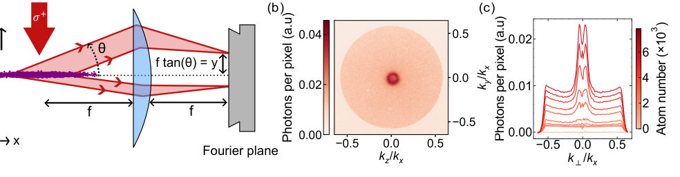
<figcaption class="paper-figure-caption"><b>Fig 1.</b> FIG. 1. (a) Simplified schematics of the experiment. The light emitted by an initially inverted elongated cloud of two-level Rb atoms is collected on an EMCCD camera placed in the Fourier plane of the imaging system: the position in this plane is related to the wavevector components by (y, z) = (ky, kz)f/kx with tan θ = ky,z/kx. (b) Fourier plane image of the emission pattern of a cloud of 5000 atoms, integrated over a superradiant burst. (c) One-dimensional azimuthal averages of the Fourier plane image for various atom numbers.</figcaption>
</figure>
<figure class="paper-figure-card">
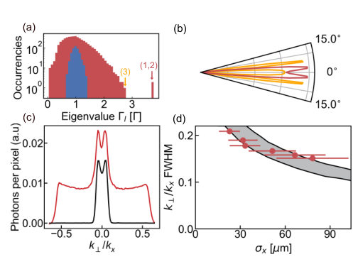
<figcaption class="paper-figure-caption"><b>Fig 2.</b> FIG. 2. Collective modes of a cloud with σx = 78 µm and σr = 1.7 µm. (a) Distribution of Γl’s for N = 5000 atoms (red) and N = 500 atoms (blue). (b) Normalized angular emission pattern for the most superradiant mode (red), and the third mode (orange). (c) Azimuthal average of the emis- sion pattern comparing experiment in red (σx = 78(20) µm and σr = 2.2(5) µm) and the theoretical pattern of the most superradiant mode (black). (d) FWHM of the superradiant emission pattern (experiment in red) and the corresponding theoretical values (in black) as a function of rms length σx of the cloud. The error region (gray area) in the theoretical prediction accounts for the experimental uncertainty on...</figcaption>
</figure>
<figure class="paper-figure-card">
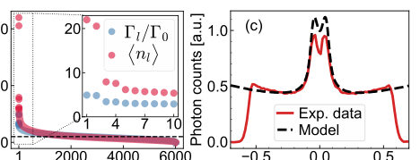
<figcaption class="paper-figure-caption"><b>Fig 3.</b> FIG. 3. (a) Schematic representation of superradiant cas- cade in the bosonic model (see text). (b) Calculated number of photons emitted per mode using the bosonic model, com- pared to the eigenvalues Γl/Γ0 for a cloud with σx = 78 µm, σr = 1.7 µm. (c) Calculated emission pattern integrated over the duration of the decay (dotted line), compared to the ex- perimental data.</figcaption>
</figure>
<figure class="paper-figure-card">
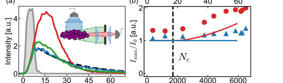
<figcaption class="paper-figure-caption"><b>Fig 4.</b> FIG. 4. (a) Superradiant temporal emission measured after a π-pulse, with various collection schemes. Red: selection of the most superradiant mode. Blue: direction orthogonal to the cloud’s axis. Green: Axial emission, blocking the super- radiant cone of light . (b) Maximum intensity Imax, relative to the intensity I0 at t = 6 ns. We choose this time because at high atom number superradiance begins before the pulse end (9 ns). Solid lines correspond to the toy model (see text). The dashed vertical line shows the theoretical critical atom number for both cases as defined in the text.</figcaption>
</figure>
</div>

<p><strong>Summary.</strong> The study experimentally investigates superradiant emission from cold atomic clouds using Fourier imaging to map out the spatial structure of emitted light. By comparing these measurements with theoretical models, the authors successfully demonstrate that collective spontaneous decay is governed by specific, measurable jump operators. This work advances our understanding of how mode competition dictates the macroscopic dynamics in interacting quantum many-body systems.</p>
<p><strong>Why it may be interesting.</strong> This work provides crucial experimental validation for advanced theoretical frameworks describing open quantum systems, specifically demonstrating how collective decay dynamics can be mapped onto measurable spectral properties (eigenvalues/decay rates) of the system's environment coupling.</p>
<details>
<summary>Detailed structure</summary>
<p><strong>Main problem.</strong> The study aims to experimentally measure and theoretically characterize the collective spontaneous emission modes associated with superradiant decay in cold atomic clouds.</p>
<p><strong>Main result.</strong> The authors successfully measured a highly directional, ring-shaped emission pattern corresponding to the most superradiant mode, confirming theoretical predictions regarding the dominance of specific collective jump operators.</p>
<p><strong>Method.</strong> The research combines Fourier imaging of emitted light with advanced quantum optical modeling using master equations and diagonalization of decay matrices.</p>
<p><strong>Model / system.</strong> The system involves cold $^{87}	ext{Rb}$ atoms in an optical dipole trap, whose superradiant emission is governed by a master equation incorporating collective jump operators derived from the vacuum Green's function. Theoretical analysis models mode competition using bosonic and Lindblad approximations.</p>
<p><strong>Key observables.</strong> Spatial pattern of emitted light in the far field (Fourier plane), superlinear scaling of intensity with atom number ($N$), and decay rates ($\Gamma_l$) associated with collective modes.</p>
<p><strong>Important parameters / regimes.</strong> Cloud sizes ($\sigma_x, \sigma_r$), Rabi frequencies ($\Omega$), and critical atom numbers ($N_c$). The Fresnel number $F$ governs the dependence on cloud geometry.</p>
<p><strong>Assumptions / limitations.</strong> The analysis relies on approximating the system using master equations and diagonalizing decay matrices; limitations include discrepancies between bosonic model predictions (e.g., peak intensity scaling) and experimental observations.</p>
<p><strong>Figures summary.</strong> Figures illustrate the measured ring-shaped emission pattern, compare calculated vs. initial probability distributions of superradiant modes, and show how the spectral gap ($\Gamma_1/\Gamma_3$) depends on cloud geometry parameters like $\sigma_r$ and $\sigma_x$.</p>
<p><strong>Paper structure.</strong> The paper progresses from measuring the spatial patterns of emission to analyzing mode competition using bosonic approximations, refining the model with a detailed Lindblad operator, and finally deriving theoretical conditions for superradiance based on eigenvalue analysis.</p>
</details>
<details>
<summary>Abstract</summary>
<p>We measure the spatial pattern associated with the superradiant emission from a cloud of cold 87Rb atoms using Fourier imaging. We observe a highly directional, ring-shaped emission structure, which corresponds to a single collective jump operator associated to the most superradiant mode of the ensemble. Using spatial filtering, we isolate this channel and find the typical superradiant burst with superlinear scaling of the intensity with atom number. We compare our results to two models that describe the competition between the various decay channels, finding good agreement. Our work shows that the collective jump operators introduced by Carmichael et al. [Optics Communications 179, 417 (2000)] can be measured and manipulated.</p>
</details>
<p><sub><a href="#top">↑ back to top</a></sub></p>

<p><a id="paper-2607.07848"></a></p>
<h3 id="quantum-sensors-for-chemistry-and-materials-science">⭐ <a href="http://arxiv.org/abs/2607.07848v1">Quantum Sensors for Chemistry and Materials Science</a></h3>
<p><strong>Highlighted author(s):</strong> Mikhail D. Lukin<br>
<strong>Authors:</strong> Piotr Put, Arjun Pillai, Xuan Hoang Le, Mikhail D. Lukin, Hongkun Park<br>
<strong>Type:</strong> both · <strong>Category:</strong> other · <strong>PDF:</strong> <a href="https://arxiv.org/pdf/2607.07848v1">https://arxiv.org/pdf/2607.07848v1</a><br>
<strong>Analysis basis:</strong> full PDF text, analyzed in chunks
<strong>Topic relevance:</strong> <code>spintronics-quantum-optics interface</code> <strong>3/5</strong> · <code>QC/QI experiment</code> <strong>2/5</strong> · <code>quantum measurements</code> <strong>2/5</strong> · <code>exotic spin models in light-matter</code> <strong>1/5</strong> · <code>quantum optics experiment</code> <strong>1/5</strong></p>
<div class="figure-strip-hint">↔ Scroll figures horizontally</div>
<div class="paper-figures-scroll">
<figure class="paper-figure-card">
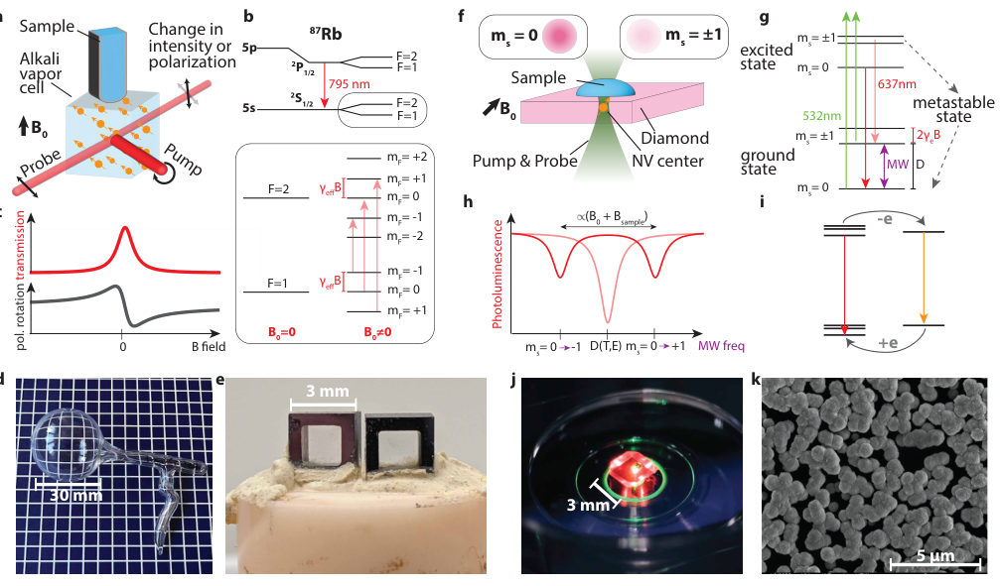
<figcaption class="paper-figure-caption"><b>Fig 1.</b> Figure 1 Quantum sensors. (a) Principle of OPM-based sensing. Sample is brought close to glass cell hosting alkali-metal vapor. Atoms in the vapor are optically polarized by a pump laser beam. Sample magnetic field leads to spin evolution, changing the absorption or polarization rotation which is probed with a weak laser beam. (b) Energy-level structure of alkali atoms (here 87Rb) used in OPMs. A laser tuned to (or near) an optical transition in the fine structure of the atom is used as a pump and probe. External magnetic field lifts the degeneracy of the energy levels within the hyperfine manifolds. The population and coherence between these Zeeman sublevels are then optically probed. (c)...</figcaption>
</figure>
<figure class="paper-figure-card">
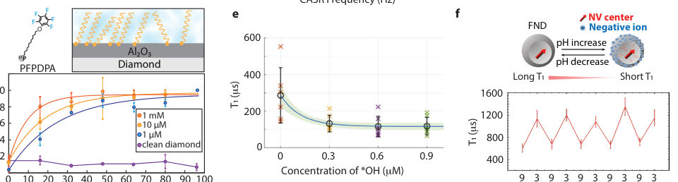
<figcaption class="paper-figure-caption"><b>Fig 2.</b> Figure 2 Chemical identification using quantum sensors. (a) NMR chemical fingerprinting using OPM detection. A compact OPM (top left) records the NMR signal from a liquid sample hyperpolarized with parahydrogen under zero magnetic field, yielding a chemically specific zero-field spectrum (bottom) and enabling relaxometry measurements (top right). The spectrum reflects J-couplings between nuclear spins in the investigated molecule (2-13C ethanol). Adapted from Ref. (Van Dyke et al., 2022). (b) Chemically specific proton NMR with NVs. High spectral resolution and micron-scale spatial resolution is achieved via hyperpolarization of 15N-labeled pyridine. ∼10 Hz J-coupling between 15N and 1H...</figcaption>
</figure>
<figure class="paper-figure-card">
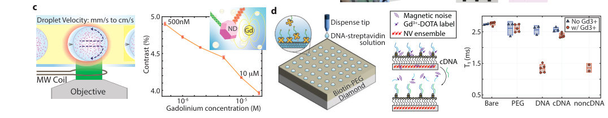
<figcaption class="paper-figure-caption"><b>Fig 3.</b> Figure 3 Chemical assays and high-throughput analysis (a) In-line detection of MNPs in flowing liquids. The magnetic field generated by passing MNPs is detected by an OPM (left). The corresponding magnetic-field variance plotted as a function of particle concentration (right) exhibits linear scaling over several orders of magnitude, with a LOD of ∼10 ppb. Adapted from Ref. (Bougas et al., 2018). (b) Multiplexed chemical detection using an OPM array. ZF NMR signals from different molecular species are recorded at distinct spatial locations, enabling simultaneous measurement of multiple samples. Adapted from Ref. (Andrews et al., 2025). (c) High-throughput paramagnetic ion sensing....</figcaption>
</figure>
<figure class="paper-figure-card">
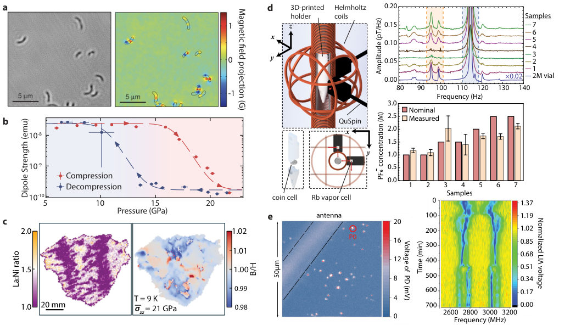
<figcaption class="paper-figure-caption"><b>Fig 4.</b> Figure 4 Quantum sensors for studying materials (a) Widefield optical (left) and magnetic (right) imaging of MTB. MNPs inside magnetosomes of MTB produce stray fields detectable by NVs in the diamond chip on which the bacteria are placed. Adapted from Ref. (Le Sage et al., 2013). (b) Probing structural phase transitions in iron. Under high pressure, iron undergoes α →ϵ phase transition from bcc to hcp crystal structure, leading to a change of effective dipole field the sample produces. Using NV centers in a DAC, this dipole field can be extracted by measuring the full vector magnetic field profile. Adapted from Ref. (Hsieh et al., 2019). (c) Correlating local stoichiometric composition with...</figcaption>
</figure>
<figure class="paper-figure-card">
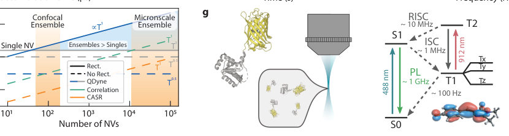
<figcaption class="paper-figure-caption"><b>Fig 5.</b> Figure 5 Advancements in quantum sensing for chemical applications (a) Gradiometric configuration for enhanced OPM performance. Magnetic sensitivity of two OPMs operating in a differential gradiometric configuration is compared under unshielded environmental conditions. The gradiometric approach significantly improves noise rejection, enabling quantum sensing in demanding settings. Adapted from Ref. (Xiao et al., 2023). (b) Large-scale OPM system demonstrating the scalability of quantum sensing platforms. Adapted from Ref. (Hill et al., 2024). (c) Quantum-enhanced metrology with OPMs. Magnetic sensitivity is shown as a function of atomic density for coherent (blue) and squeezed (green)...</figcaption>
</figure>
</div>

<p><strong>Summary.</strong> This review surveys the use of advanced quantum sensors, specifically Optically Pumped Magnetometers and NV centers in diamond, to revolutionize chemical and materials analysis. It contrasts OPMs' high bulk sensitivity with NVs' superior nanoscale resolution for applications ranging from battery monitoring to detecting free radicals. The paper argues that these technologies are poised to solve complex real-world analytical challenges.</p>
<p><strong>Why it may be interesting.</strong> This work bridges quantum physics (spin dynamics, coherence) directly into applied chemistry and materials science diagnostics. The detailed comparison between ensemble averaging (OPMs) and localized defects (NVs) provides a rich case study in translating fundamental quantum measurements to macroscopic engineering problems.</p>
<details>
<summary>Detailed structure</summary>
<p><strong>Main problem.</strong> The primary challenge addressed is overcoming the inherent limitations of conventional analytical tools—specifically regarding sensitivity, spatial resolution, and throughput—in modern chemistry and materials science.</p>
<p><strong>Main result.</strong> Quantum sensors, particularly OPMs and NV centers, are shown to be transformative platforms capable of performing highly sensitive molecular and material diagnostics in real-world settings.</p>
<p><strong>Method.</strong> The review contrasts two main quantum sensing modalities: Optically Pumped Magnetometers (OPMs) for bulk measurements and Nitrogen-Vacancy (NV) centers in diamond for nanoscale, localized probing.</p>
<p><strong>Model / system.</strong> The core physical systems are alkali-metal vapor ensembles used in OPMs and point defects ($    ext{N}$ and vacancy) within the diamond lattice forming NV centers. Sensing relies on monitoring spin states via light absorption/fluorescence (ODMR for NVs).</p>
<p><strong>Key observables.</strong> Magnetic field strength, concentration of free radicals ($ ext{ROS}$), $   ext{pH}$, temperature, and spectroscopic signatures (e.g., $    ext{NMR}$ signals) at various spatial scales.</p>
<p><strong>Important parameters / regimes.</strong> Magnetic sensitivity reaching femtotesla levels; atomic-scale resolution ($\sim 10 	ext{ nm}$) for NVs; operation in zero-to-ultralow magnetic fields ($ ext{ZULF}$).</p>
<p><strong>Assumptions / limitations.</strong> The field is maturing toward commercial viability, allowing quantum sensors to routinely address complex analytical challenges previously deemed impossible.</p>
<p><strong>Figures summary.</strong> Figures illustrate the distinct setups for OPM sensing (using alkali vapors) and NV center sensing (showing energy levels and ODMR measurements), alongside physical examples of their deployment.</p>
<p><strong>Paper structure.</strong> The paper is structured as a review, first introducing the limitations of current analytical techniques, then detailing the physics and capabilities of OPMs, followed by an in-depth comparison with the multi-modal sensing capabilities of NV centers, concluding with diverse applications like <em>operando</em> monitoring.</p>
</details>
<details>
<summary>Abstract</summary>
<p>The advancement of chemistry and materials science relies on transformative analytical tools which can overcome the sensitivity, spatial resolution, and throughput limitations of conventional techniques. This review explores the application of quantum sensors - specifically optically pumped magnetometers (OPMs) and nitrogen-vacancy (NV) centers in diamond - as robust platforms for molecular and materials analysis. We contrast the extreme magnetic sensitivity of macroscopic OPM ensembles with the atomic-scale resolution and multimodal capabilities of solid-state NV centers. We highlight their deployment in zero- to ultralow-field and nanoscale NMR spectroscopy, real-time reaction monitoring, and transient radical and pH detection. Furthermore, we discuss their integration into high-throughput chemical assays and non-destructive materials diagnostics, such as operando battery monitoring. With the ongoing commercialization of these technologies and advances in quantum-enhanced sensitivities, quantum sensors are poised to routinely address complex real-world analytical challenges.</p>
</details>
<p><sub><a href="#top">↑ back to top</a></sub></p>

<p><a id="paper-2607.08638"></a></p>
<h3 id="symmetry-as-a-route-to-generalized-bosonic-kitaev-chains">⭐ <a href="http://arxiv.org/abs/2607.08638v1">Symmetry as a route to generalized bosonic Kitaev chains</a></h3>
<p><strong>Highlighted author(s):</strong> Aashish A. Clerk<br>
<strong>Authors:</strong> Gideon Lee, Tony Jin, Aashish A. Clerk<br>
<strong>Type:</strong> theory · <strong>Category:</strong> other · <strong>PDF:</strong> <a href="https://arxiv.org/pdf/2607.08638v1">https://arxiv.org/pdf/2607.08638v1</a><br>
<strong>Analysis basis:</strong> full PDF text, analyzed in chunks
<strong>Topic relevance:</strong> <code>analog quantum simulation</code> <strong>3/5</strong> · <code>driven-dissipative phase transition</code> <strong>2/5</strong> · <code>Frenkel-Kontorova</code> <strong>1/5</strong> · <code>correlated cavity matter</code> <strong>1/5</strong> · <code>methods for driven-dissipative</code> <strong>1/5</strong> · <code>non-equilibrium dynamics</code> <strong>1/5</strong></p>
<div class="figure-strip-hint">↔ Scroll figures horizontally</div>
<div class="paper-figures-scroll">
<figure class="paper-figure-card">
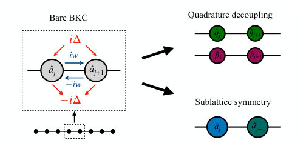
<figcaption class="paper-figure-caption"><b>Fig 1.</b> Figure 1. Left: Schematic of the bosonic Kitaev chain (BKC), a one-dimensional model with hopping iw and pairing i∆on each bond. Despite being Hermitian, it exhibits a number of striking features typically associated with non-Hermitian topology. Right: Two symmetries of the BKC relevant to its exceptional behaviour: decoupling of q and p quadrature dynamics (which can be mapped to a particle hole type sym- metry), and a sublattice or chiral symmetry (which becomes an effective time-reversal symmetry). More general BKC-like models can be constructed by retaining one or both of these symmetries.</figcaption>
</figure>
<figure class="paper-figure-card">
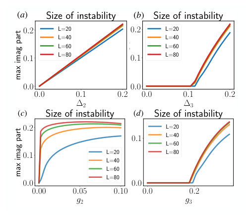
<figcaption class="paper-figure-caption"><b>Fig 2.</b> Figure 2. Plot of the maximum imaginary part of any eigen- value of (a) ∆2-BKC, (b) ∆3-BKC, against the value of ∆2,3, and (c) g2-BKC, (d) g3-BKC, against the value of g1,2. The other (underlying bare BKC) parameters are set to w = 1, ∆= 0.25, and all values are computed under OBC for a range of system sizes L = 20, 40, 60, 80. The perturba- tions depicted in the left column break sublattice symmetry; accordingly the BKC under OBC is immediately unstable against such perturbations. Conversely, the perturbations depicted in the right column preserve sublattice symmetry; accordingly the stability of BKC under OBC is protected against such perturbations.</figcaption>
</figure>
<figure class="paper-figure-card">
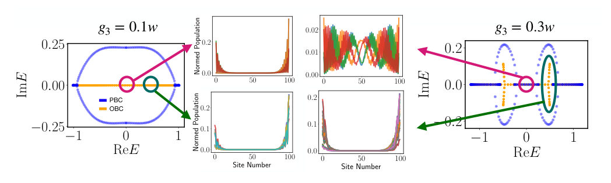
<figcaption class="paper-figure-caption"><b>Fig 3.</b> Figure 3. Plot depicting the localization-delocalization transition (or lack thereof) of particular sets of eigenstates in the spectrum of the g3-BKC. The left-most figure depicts the spectrum of the g3-BKC for w = 1, ∆= 0.25w, g = 0.1w, with the OBC spectrum in orange and the PBC spectrum in blue. In this case, both states around E = 0 and E = ±w sin(π/6) are localized; in the second column of plots we plot a selection of such states. These are the states corresponding to eigenvalues whose real part is less than 0.05w away from E = 0(E = w sin π/6). The quantity being plotted is the normalized population supported on each lattice site. The left-most figure depicts the spectrum of the...</figcaption>
</figure>
<figure class="paper-figure-card">
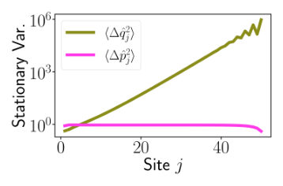
<figcaption class="paper-figure-caption"><b>Fig 4.</b> Figure 5. Steady-state position-dependent quadrature vari- ances of the ∆2-BKC subject to background loss, w = 1, ∆= 0.25, ∆2 = 0.2, L = 50. The effect of the loss is uniformly translate the spectra down by ImE →ImE −0.3 (this corresponds to dissipators of the form √κˆaj, κ = 0.5). Plotted are the diagonal covariance matrix elements ⟨∆ˆq2 j ⟩ and ⟨∆ˆp2 j⟩for an OBC chain. The q quadrature covariance is exponentially amplified toward the right boundary, while the p quadrature remains uniform across the chain.</figcaption>
</figure>
<figure class="paper-figure-card">
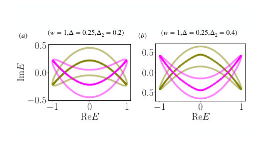
<figcaption class="paper-figure-caption"><b>Fig 5.</b> Figure 4. Spectra for the ∆2-BKC (see Eq. (71)). The olive curves depict the q band, and the magenta curves depict the p band. The solid points are the eigenvalues under OBC and the translucent lines are for PBC. In both (a), (b), the underlying BKC has parameters w = 1, ∆= 0.25w. The plots (a), (b) differ only by the size of the parameter ∆2 = 0.2w and ∆2 = 0.4w. In both panels, the PBC version of the q (p) band winds around the entirety of the OBC version of the q(p) band only, but not the other p (q) band. In (a), both bands wind around E = 0, whereas in (b), neither band does.</figcaption>
</figure>
</div>

<p><strong>Summary.</strong> This work analyzes the symmetries governing the Bosonic Kitaev Chain and related quadratic pairing Hamiltonians. It demonstrates that two distinct types of effective symmetries—sublattice symmetry and particle-hole symmetry—govern different topological features like skin effects. The findings provide a comprehensive classification scheme for these 1D bosonic systems, extending to interacting models via mean-field theory.</p>
<p><strong>Why it may be interesting.</strong> The detailed symmetry analysis provides a powerful theoretical toolkit for understanding topological phases in bosonic quantum systems, which is crucial for designing novel superconducting or cavity QED circuits.</p>
<details>
<summary>Detailed structure</summary>
<p><strong>Main problem.</strong> The paper investigates how symmetries dictate non-trivial topological phenomena, such as skin effects, in bosonic pairing Hamiltonians beyond the basic Kitaev model.</p>
<p><strong>Main result.</strong> It establishes that two distinct symmetries—sublattice (chiral) symmetry and effective particle-hole symmetry from quadrature decoupling—can independently be used to construct generalized, stable bosonic pairing models with non-trivial topology.</p>
<p><strong>Method.</strong> The analysis relies on deriving the dynamics via a dynamical matrix in the quadrature basis and applying topological diagnostics like winding numbers or specialized invariants for bosonic systems.</p>
<p><strong>Model / system.</strong> The primary model is the Bosonic Kitaev Chain (BKC), a quadratic pairing Hamiltonian for bosons. The study extends to general 1D translationally-invariant quadratic bosonic Hamiltonians, including interactions treated at mean-field level.</p>
<p><strong>Key observables.</strong> Non-Hermitian Skin Effect (NHSE), topological invariants derived from symmetries, and the spectral stability of the system's dynamical matrix eigenvalues.</p>
<p><strong>Important parameters / regimes.</strong> Hopping ($w$), pairing ($\Delta$), interaction strengths ($U$, $g$), and momentum ($k$).</p>
<p><strong>Assumptions / limitations.</strong> The analysis often relies on approximations (e.g., leading order in 1/N) or mean-field treatments when considering interacting terms.</p>
<p><strong>Figures summary.</strong> Figure 1 schematically illustrates the BKC and highlights the two key symmetries: quadrature decoupling linked to particle-hole symmetry, and sublattice symmetry linked to an effective time-reversal symmetry.</p>
<p><strong>Paper structure.</strong> The paper first analyzes the basic BKC model by identifying its inherent symmetries. It then develops generalized models based on preserving only one of these symmetries. The structure progresses through classifying all 1D quadratic systems and finally discusses extending the framework to interacting, non-quadratic Hamiltonians using mean-field theory.</p>
</details>
<details>
<summary>Abstract</summary>
<p>The bosonic Kitaev chain (BKC) model is a deceptively simple looking quadratic pairing Hamiltonian. Despite being purely Hermitian, it exhibits a number of striking non-Hermitian topological phenomena, including skin effects. We show here how symmetries play a key role in this model, and how identifying these allows one to develop generalized BKC-like models. We emphasize the surprising fact that any quadratic bosonic pairing Hamiltonian with a sublattice (chiral) symmetry necessarily has a dynamical matrix with an effective time reversal symmetry. This symmetry is unrelated to physical time-reversal, but enables non-trivial topological invariants. We also discuss how this symmetry is unrelated to another key property of the BKC, the decoupling of quadrature dynamics. This feature can instead be connected to a distinct symmetry, namely an effective particle-hole symmetry of the dynamical matrix. We discuss non-trivial generalized BKC models that only keep one of these two effective symmetries intact. We also provide a classification of all translationally-invariant 1D pairing Hamiltonians, and show connections between the BKC and a well-studied non-Hermitian fermionic system, the symplectic Hatano-Nelson model.</p>
</details>
<p><sub><a href="#top">↑ back to top</a></sub></p>

<p><a id="paper-2607.07835"></a></p>
<h3 id="super-logarithmic-entanglement-scaling-in-a-monitored-superconducting-chain"><a href="http://arxiv.org/abs/2607.07835v1">Super-Logarithmic Entanglement Scaling in a Monitored Superconducting Chain</a></h3>
<p><strong>Authors:</strong> Rui-Jing Guo, Zhi-Yuan Wei<br>
<strong>Type:</strong> theory · <strong>Category:</strong> statistical mechanics · <strong>PDF:</strong> <a href="https://arxiv.org/pdf/2607.07835v1">https://arxiv.org/pdf/2607.07835v1</a><br>
<strong>Analysis basis:</strong> full PDF text, analyzed in chunks
<strong>Topic relevance:</strong> 🔥 <code>measurement-induced transitions</code> <strong>5/5</strong> · 🔥 <code>Keldysh / 2PI / non-Gaussian methods</code> <strong>4/5</strong> · 🔥 <code>entanglement &amp; information structure</code> <strong>4/5</strong> · 🔥 <code>non-equilibrium universality</code> <strong>4/5</strong> · 🔥 <code>quantum measurements</code> <strong>4/5</strong> · <code>correlated / nonlocal dissipation</code> <strong>3/5</strong> · <code>driven-dissipative phase transition</code> <strong>3/5</strong> · <code>methods for driven-dissipative</code> <strong>3/5</strong> · <code>non-equilibrium dynamics</code> <strong>3/5</strong> · <code>Kondo &amp; dissipative impurity</code> <strong>1/5</strong> · <code>analog quantum simulation</code> <strong>1/5</strong> · <code>exotic spin models in light-matter</code> <strong>1/5</strong></p>
<div class="figure-strip-hint">↔ Scroll figures horizontally</div>
<div class="paper-figures-scroll">
<figure class="paper-figure-card">
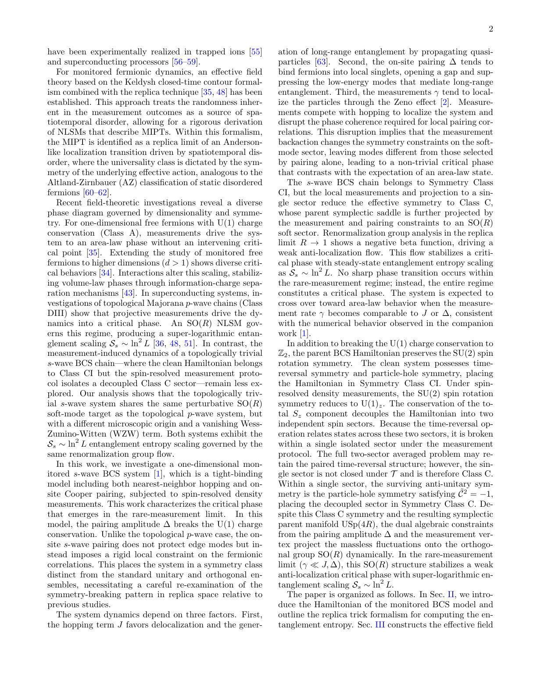
<figcaption class="paper-figure-caption"><b>Fig 1.</b> Low-resolution page preview, page 2</figcaption>
</figure>
<figure class="paper-figure-card">
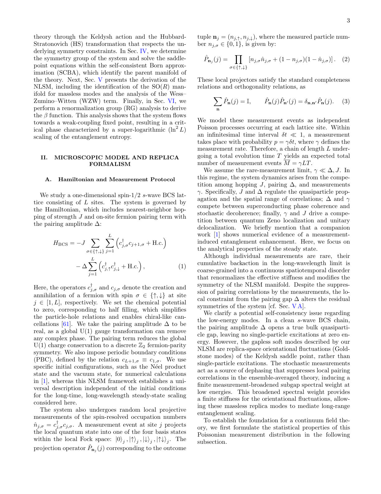
<figcaption class="paper-figure-caption"><b>Fig 2.</b> Low-resolution page preview, page 3</figcaption>
</figure>
<figure class="paper-figure-card">
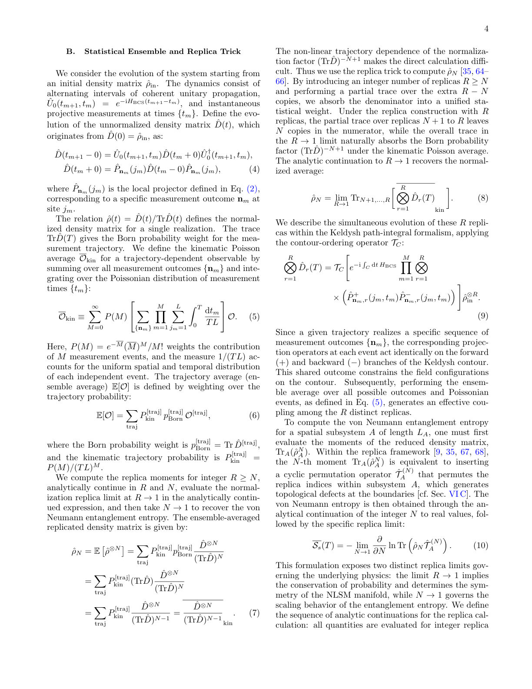
<figcaption class="paper-figure-caption"><b>Fig 3.</b> Low-resolution page preview, page 4</figcaption>
</figure>
<figure class="paper-figure-card">
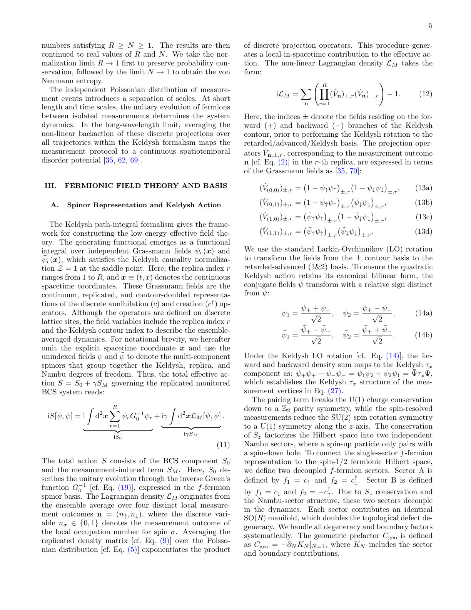
<figcaption class="paper-figure-caption"><b>Fig 4.</b> Low-resolution page preview, page 5</figcaption>
</figure>
<figure class="paper-figure-card">
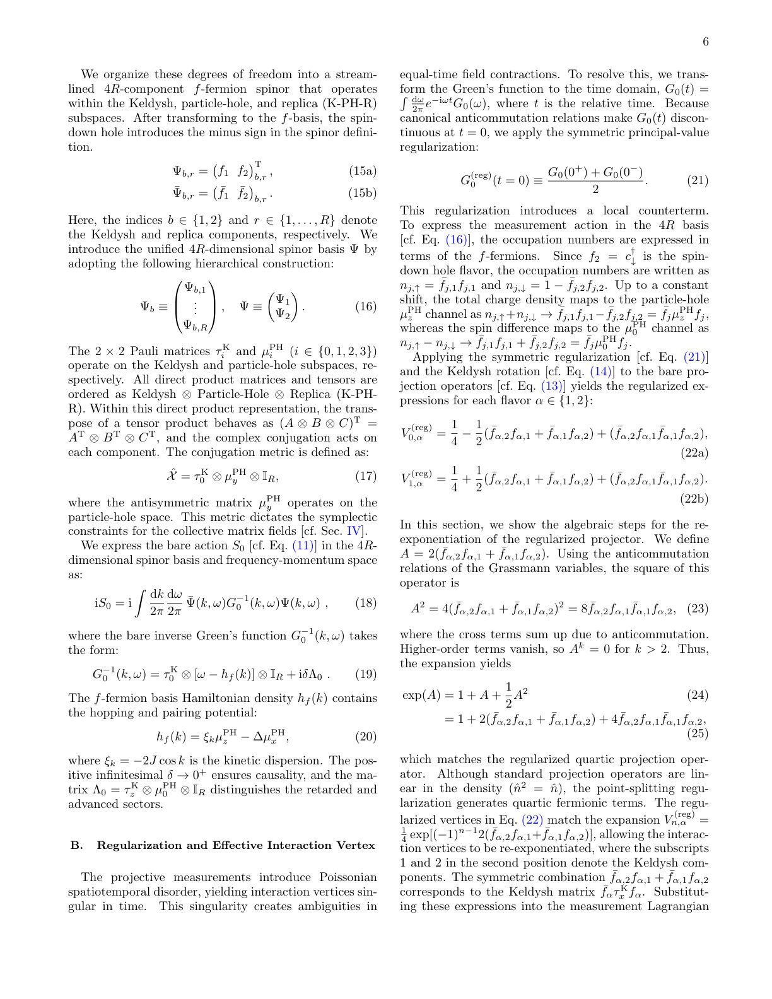
<figcaption class="paper-figure-caption"><b>Fig 5.</b> Low-resolution page preview, page 6</figcaption>
</figure>
</div>

<p><strong>Summary.</strong> This work develops an effective field theory description using the Keldysh-replica NLSM for entanglement dynamics in a monitored BCS superconductor. By analyzing the RG flow of this model, the authors predict that the system settles into a critical phase characterized by super-logarithmic entanglement scaling ($\ln^2 L$). This result explains numerical findings without invoking topological terms.</p>
<p><strong>Why it may be interesting.</strong> It provides a field-theoretic understanding of non-equilibrium steady states in superconducting systems under continuous monitoring, linking concepts from critical phenomena (RG flow) to quantum information measures (entanglement entropy).</p>
<details>
<summary>Detailed structure</summary>
<p><strong>Main problem.</strong> The study investigates entanglement dynamics in a monitored superconducting chain, focusing on characterizing the critical phase established by the interplay between unitary evolution and projective measurements.</p>
<p><strong>Main result.</strong> The system exhibits super-logarithmic steady-state entanglement scaling, $S(L) \sim \ln^2 L$, driven by a weak-anti-localization flow in the effective field theory description.</p>
<p><strong>Method.</strong> The analysis employs the Keldysh-replica non-linear sigma model (NLSM) formalism combined with one-loop renormalization group (RG) calculations to analyze the low-energy fluctuations.</p>
<p><strong>Model / system.</strong> The system is a one-dimensional spinful s-wave BCS chain subjected to rare, spin-resolved projective measurements ($\gamma \ll J, \Delta$). The effective dynamics are mapped onto an SO(R) target manifold in replica space.</p>
<p><strong>Key observables.</strong> Entanglement entropy scaling $S_s(L)$, and the running coupling constant $g(\ell)$ derived from RG flow.</p>
<p><strong>Important parameters / regimes.</strong> Rare-measurement regime ($\gamma \ll J, \Delta$), Replica limit ($R	o 1$), and the system size $L$.</p>
<p><strong>Assumptions / limitations.</strong> The analysis assumes a rare-measurement limit and relies on projecting fluctuations onto an SO(R) manifold after applying saddle point approximations.</p>
<p><strong>Figures summary.</strong> Not specified by notes, but the core results concern scaling laws derived from RG flow equations.</p>
<p><strong>Paper structure.</strong> The paper develops the Keldysh-replica NLSM for entanglement dynamics. It analyzes how measurement backaction constrains the system to an SO(R) manifold. Finally, a one-loop RG analysis of this model yields the super-logarithmic scaling result.</p>
</details>
<details>
<summary>Abstract</summary>
<p>We develop a Keldysh-replica non-linear sigma model (NLSM) for the entanglement dynamics of a monitored one-dimensional spinful $s$-wave BCS chain in the rare-measurement regime, $γ\ll J,Δ$. Although the clean spinful $s$-wave BCS Hamiltonian belongs to symmetry class CI, spin-resolved measurements and projection to a conserved $f$-sector reduce the effective problem to class C. Starting from the corresponding parent symplectic saddle, we show that measurement backaction and the pairing amplitude impose complementary mass constraints that gap out different fluctuation channels. Their interplay dynamically projects the surviving massless modes onto an $\textrm{SO(R)}$ target manifold in replica space. A one-loop renormalization group analysis of this $\textrm{SO(R)}$ NLSM shows that, in the replica limit $R\to1$, the beta function becomes negative, producing a weak-anti-localization flow. This flow yields a super-logarithmic steady-state entanglement scaling $S(L)\sim \ln^2 L$ in the rare-measurement regime. Our field-theoretic result explains the numerical evidence reported in the companion Letter [arXiv:2604.04375] and shows that a topologically trivial monitored $s$-wave superconductor can realize an $\textrm{SO(R)}$ weak-anti-localizing critical phase without relying on a Wess-Zumino-Witten term.</p>
</details>
<p><sub><a href="#top">↑ back to top</a></sub></p>

<p><a id="paper-2607.08589"></a></p>
<h3 id="universality-of-measurement-induced-criticality-under-symmetry-breaking-measurements"><a href="http://arxiv.org/abs/2607.08589v1">Universality of Measurement-Induced Criticality under Symmetry-Breaking Measurements</a></h3>
<p><strong>Authors:</strong> Angelo Russotto, Filiberto Ares, Pasquale Calabrese<br>
<strong>Type:</strong> theory · <strong>Category:</strong> statistical mechanics · <strong>PDF:</strong> <a href="https://arxiv.org/pdf/2607.08589v1">https://arxiv.org/pdf/2607.08589v1</a><br>
<strong>Analysis basis:</strong> full PDF text, analyzed in chunks
<strong>Topic relevance:</strong> 🔥 <code>measurement-induced transitions</code> <strong>5/5</strong> · 🔥 <code>non-equilibrium universality</code> <strong>4/5</strong> · <code>driven-dissipative phase transition</code> <strong>3/5</strong> · <code>entanglement &amp; information structure</code> <strong>3/5</strong> · <code>methods for driven-dissipative</code> <strong>3/5</strong> · <code>non-equilibrium dynamics</code> <strong>3/5</strong> · <code>quantum measurements</code> <strong>3/5</strong> · <code>correlated / nonlocal dissipation</code> <strong>2/5</strong> · <code>Keldysh / 2PI / non-Gaussian methods</code> <strong>1/5</strong> · <code>analog quantum simulation</code> <strong>1/5</strong></p>
<div class="figure-strip-hint">↔ Scroll figures horizontally</div>
<div class="paper-figures-scroll">
<figure class="paper-figure-card">
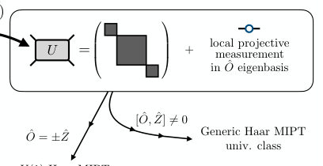
<figcaption class="paper-figure-caption"><b>Fig 1.</b> Figure 1: (a) Sketch of the monitored random quantum circuit model considered in this paper. It has a brickwork structure in which each two-qubit gate U conserves the magnetization ˆ Zj + ˆZj+1. Therefore, the gates have a block-diagonal structure in which the blocks, corresponding to fixed magnetization sectors, are independently drawn from the Haar unitary ensemble, as illustrated in the box. After a layer of unitary gates, the sites are projectively measured with probability p in the eigenbasis of a local operator ˆO. The sites measured during the time evolution are represented by blue dots on the links between unitary gates. The system is initialized in the pure state |Ψ(0)⟩, and its...</figcaption>
</figure>
<figure class="paper-figure-card">
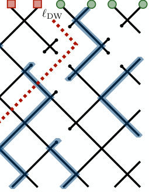
<figcaption class="paper-figure-caption"><b>Fig 2.</b> Figure 2: Two dimensional statistical model describing the average Rényi-n entropy of the monitored circuit of Sec. 2 in the limit of large local Hilbert space dimension. The lattice vertices correspond to the averaged replicated unitary gates and bonds rep- resent the sites of the quantum system. Broken bonds correspond to local projective measurements. On each vertex is defined a permutation degree of freedom σ ∈Sn. The bipartition into subsystems A∪B imposes specific boundary conditions on the top layer, indicated by the red squares and green circles. Red squares represent the cyclic permuta- tion, while green circles denote the identity permutation. The vertices are constrained to be in...</figcaption>
</figure>
<figure class="paper-figure-card">
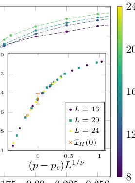
<figcaption class="paper-figure-caption"><b>Fig 3.</b> Figure 3: Trajectory-averaged tripartite mutual information E[I3,1], for n = 1, in the stationary state at t ∼2L of the U(1)-symmetric Haar random circuit with measure- ments in the X basis, as a function of the measurement rate p and for increasing system size L. We average over ∼2 × 103 quantum trajectories. The errorbars correspond to one standard deviation of the mean. For L ≥16, the data develop a clear crossing as the system size increases, signaling the presence of an MIPT at that measurement rate. Inset: Finite-size scaling of E[I3,1] according to the scaling ansatz in Eq. (32), using the optimal pc and ν from Eq. (33), obtained as described in App. C. For L ≥16, we observe that the...</figcaption>
</figure>
<figure class="paper-figure-card">
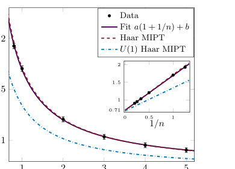
<figcaption class="paper-figure-caption"><b>Fig 4.</b> Figure 4: Half-system Rényi-n entanglement entropy E[Sn] averaged over ∼103 quan- tum trajectories at the estimated critical point pc = 0.143 in the U(1)-symmetric Haar random circuit with symmetry-breaking measurements in the X basis. Left panel: Log- arithmic growth of E[Sn(pc)] as a function of the system size L for various Rényi indices. The symbols are the exact numerical results, while dashed lines represent the fits of the function Sn(L) = α(n) log L + β(n) to the data. The errorbars are of the order of the symbol size and correspond to one standard deviation of the mean. Right panel: Sym- bols represent the values of the coefficient α(n) obtained from the fits as a function of the...</figcaption>
</figure>
<figure class="paper-figure-card">
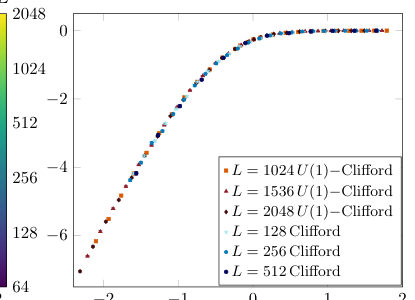
<figcaption class="paper-figure-caption"><b>Fig 5.</b> Figure 5: Left panel: Tripartite mutual information I3,1, for n = 1, averaged over ∼6 × 103 quantum trajectories, in the stationary state at t ∼2L, of the symmetric random stabilizer circuit with projective measurements in the X basis, as a function of the measurement rate p and different system sizes L. The errorbars are of the order of the symbol size and correspond to one standard deviation of the mean. Inset: Zoom of the data around the critical point. We observe a drift of the crossing, signaling the MIPT, toward larger values of p up to L ∼512. For this reason, we perform the finite- size scaling using the data for L ≥768. Right panel: Finite-size scaling of E[I3,1] using the ansatz...</figcaption>
</figure>
</div>

<p><strong>Summary.</strong> The paper analyzes the critical physics of quantum circuits subjected to measurements that break a global U(1) symmetry. By mapping the dynamics to a classical exclusion process in the large dimension limit, the authors prove that this symmetry breaking drives the system to a universal critical point identical to non-symmetric cases. This contrasts sharply with symmetry-preserving measurements and provides insights into how measurement protocols control quantum criticality.</p>
<p><strong>Why it may be interesting.</strong> This work directly addresses non-equilibrium quantum dynamics in open systems, showing how measurement back-action dictates universal critical behavior, which is highly relevant for understanding decoherence and information scrambling in physical platforms like superconducting qubits or trapped ions.</p>
<details>
<summary>Detailed structure</summary>
<p><strong>Main problem.</strong> The study investigates how local projective measurements that explicitly break a global U(1) symmetry affect the critical properties of random quantum circuits.</p>
<p><strong>Main result.</strong> Symmetry-breaking measurements act as relevant perturbations, driving the system to the same universal critical behavior as generic monitored circuits. Furthermore, this process prevents a charge-sharpening transition by keeping the charge correlation length finite.</p>
<p><strong>Method.</strong> The analysis uses the large local Hilbert-space limit ($d 	o \infty$) to map the quantum dynamics onto an exactly solvable classical statistical mechanics model (a symmetric simple exclusion process).</p>
<p><strong>Model / system.</strong> The system is a monitored random quantum circuit with U(1) symmetry, involving two-qubit gates and local projective measurements. The analysis compares this to circuits with non-symmetric unitary dynamics.</p>
<p><strong>Key observables.</strong> Entanglement entropy, charge correlation length ($\xi_{charge}$), and the universality class of the Measurement-Induced Phase Transition (MIPT).</p>
<p><strong>Important parameters / regimes.</strong> Measurement rate ($p$), local Hilbert-space dimension ($d 	o \infty$ limit), and the symmetry-breaking nature of the measurement operator.</p>
<p><strong>Assumptions / limitations.</strong> The primary analytical tool relies on taking the large local Hilbert-space dimension limit to map the problem onto a classical statistical model; numerical support is given for finite dimensions.</p>
<p><strong>Figures summary.</strong> Figure 1 sketches the monitored random quantum circuit structure, illustrating how symmetry breaking leads to the generic MIPT universality class, while preserving symmetry leads elsewhere. Other figures detail the mapping to the SSEP and numerical scaling results.</p>
<p><strong>Paper structure.</strong> The paper first establishes the model (U(1)-symmetric circuits with local measurements). It then analyzes the large $d$ limit by mapping entanglement entropy to a classical process. The core result proves the relevance of symmetry breaking, contrasting it with symmetry-preserving cases and providing numerical verification.</p>
</details>
<details>
<summary>Abstract</summary>
<p>We study the critical properties of random quantum circuits with a $U(1)$ symmetry subject to local projective measurements that explicitly break this symmetry. We find that, at the measurement-induced phase transition, symmetry-breaking measurements act as a relevant perturbation at large scales, leading to the same universal critical properties as the corresponding monitored random circuit with non-symmetric unitary dynamics. In particular, we consider monitored $U(1)$-symmetric Haar-random circuits in the limit of large local Hilbert-space dimension, where the trajectory-averaged entanglement entropy can be exactly obtained in terms of a classical statistical mechanics model. In this model, the charge associated with the conservation law follows a symmetric simple exclusion process, in which symmetry-breaking measurements correspond to disordered defects that create and destroy charges. We prove that the charge correlation length remains finite for any measurement rate, ruling out a charge-sharpening transition, in contrast to the case of symmetry-preserving measurements. We further support our predictions at finite local Hilbert-space dimension through numerical finite-size scaling analyses of the entanglement transition in monitored $U(1)$-symmetric Haar and stabilizer random circuits.</p>
</details>
<p><sub><a href="#top">↑ back to top</a></sub></p>

<p><a id="paper-2607.08166"></a></p>
<h3 id="efficient-pauli-decomposition-and-multistage-state-refinement-for-tensor-network-based-differential-equation-solver"><a href="http://arxiv.org/abs/2607.08166v1">Efficient Pauli-decomposition and multistage state-refinement for tensor network based differential equation solver</a></h3>
<p><strong>Authors:</strong> Vishwabhushan Suresh Gholap, Himadri Shekhar Dhar, Siddhartha Santra<br>
<strong>Type:</strong> theory · <strong>Category:</strong> numerical methods · <strong>PDF:</strong> <a href="https://arxiv.org/pdf/2607.08166v1">https://arxiv.org/pdf/2607.08166v1</a><br>
<strong>Analysis basis:</strong> full PDF text, analyzed in chunks
<strong>Topic relevance:</strong> 🔥 <code>methods for driven-dissipative</code> <strong>5/5</strong> · 🔥 <code>analog quantum simulation</code> <strong>4/5</strong> · <code>non-equilibrium dynamics</code> <strong>2/5</strong> · <code>Keldysh / 2PI / non-Gaussian methods</code> <strong>1/5</strong> · <code>correlated / nonlocal dissipation</code> <strong>1/5</strong> · <code>driven-dissipative phase transition</code> <strong>1/5</strong> · <code>entanglement &amp; information structure</code> <strong>1/5</strong></p>
<div class="figure-strip-hint">↔ Scroll figures horizontally</div>
<div class="paper-figures-scroll">
<figure class="paper-figure-card">
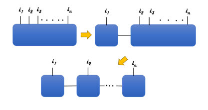
<figcaption class="paper-figure-caption"><b>Fig 1.</b> FIG. 1. Successive SVD truncations used to obtain the MPS representation of the coefficient tensor. Only the first trun- cation step is shown explicitly; the downward arrow shows repetition of same decomposition for each remaining sites.</figcaption>
</figure>
<figure class="paper-figure-card">
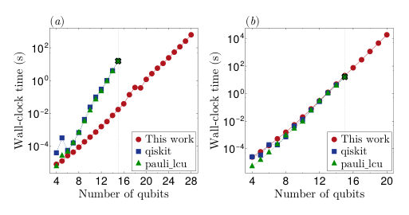
<figcaption class="paper-figure-caption"><b>Fig 2.</b> FIG. 2. Wall-clock time scaling of the Pauli-basis expansion as a function of the number of qubits 𝑛for the (a) Laplacian and (b) Legendre operators. Red circles (solid line) denote the present approach, navy squares (dashed line) denote the Qiskit and green triangles (dotted line) denote pauli lcu [42] implementations. The × marker indicates the point beyond which Qiskit and pauli lcu exhausts available memory (𝑛&gt; 15), while the present approach continues to function.</figcaption>
</figure>
<figure class="paper-figure-card">
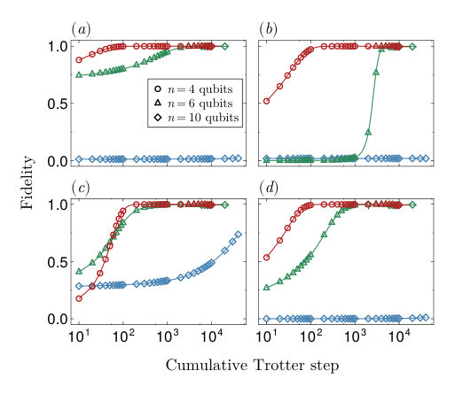
<figcaption class="paper-figure-caption"><b>Fig 3.</b> FIG. 4. Fidelity vs. cumulative number of Trotter step for the (a) ground, (b) first, (c) second, and (d) third excited states of the Laplacian operator. Colors indicate the multistage state- refinement strategy (𝑛= 4 →6 →10 (red), 6 →10 (green), or 10 directly (blue)); markers indicate the qubit count 𝑛(see legend, panel a). Trotter step size is kept constant at 0.1.</figcaption>
</figure>
<figure class="paper-figure-card">
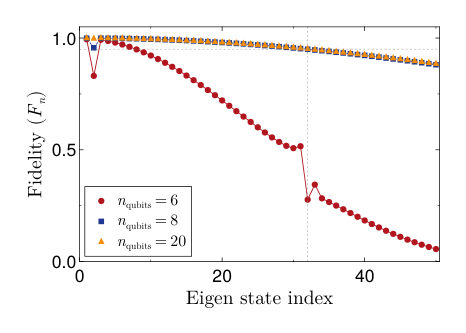
<figcaption class="paper-figure-caption"><b>Fig 4.</b> FIG. 3. Fidelity of first 50 eigenstate of the Dirichlet Lapla- cian on [−1, 1] obtained via multistage imaginary time evolu- tion on 6, 8 and 20 qubits (see legend). For 20 qubits, first 32 states have 𝐹≥0.95 with 𝐹= 0.9511 for state 32.</figcaption>
</figure>
<figure class="paper-figure-card">
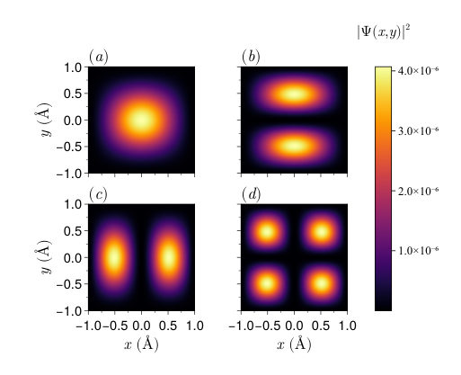
<figcaption class="paper-figure-caption"><b>Fig 5.</b> FIG. 5. Probability density |Ψ|2 of the first four eigenstates of the separable 2𝐷anharmonic oscillator confined in a box.(𝑎) Ground state, (𝑏) first, (𝑐) second and (𝑑) third excited states.</figcaption>
</figure>
</div>

<p><strong>Summary.</strong> This paper presents novel computational techniques to solve large-scale differential equations by mapping them onto tensor network representations. It overcomes memory bottlenecks in operator construction using Pauli decomposition and significantly accelerates convergence during imaginary time evolution. These advancements allow accurate computation of eigenstates for high-dimensional quantum systems previously deemed intractable.</p>
<p><strong>Why it may be interesting.</strong> It provides advanced numerical tools for simulating quantum Hamiltonians derived from continuous physics (PDEs), which is highly relevant for studying open quantum systems or lattice approximations of continuum theories.</p>
<details>
<summary>Detailed structure</summary>
<p><strong>Main problem.</strong> Solving Partial Differential Equations (PDEs) numerically, which becomes computationally expensive as the dimension of the discretized operator increases.</p>
<p><strong>Main result.</strong> The authors developed techniques to efficiently construct Matrix Product Operators (MPOs) via Pauli-string decomposition and accelerated convergence using a multistage state-refinement heuristic.</p>
<p><strong>Method.</strong> The core methods involve representing differential operators as MPOs, constructing these MPOs by expanding the operator in the Pauli basis with memory reduction techniques, and accelerating imaginary time evolution through multi-stage refinement.</p>
<p><strong>Model / system.</strong> The work applies to solving eigensystems arising from Sturm–Liouville problems (e.g., Laplacian on a 1D lattice or 2D anharmonic oscillator), mapping them onto quantum systems solvable via tensor networks.</p>
<p><strong>Key observables.</strong> Eigenvalues and eigenvectors of the differential operator; fidelity of computed eigenstates.</p>
<p><strong>Important parameters / regimes.</strong> The dimension of the discretized operator ($N$), the number of qubits ($n=\log_2 N$), and the bond dimension ($\chi$).</p>
<p><strong>Assumptions / limitations.</strong> The method assumes the underlying operators can be efficiently decomposed into a polynomial number of Pauli strings; accuracy degrades for disordered systems due to increased entanglement.</p>
<p><strong>Figures summary.</strong> Not specified, but mathematical propositions (e.g., Proposition 1-7) and an algorithm (Algorithm 1) are central to the derivation.</p>
<p><strong>Paper structure.</strong> The paper builds from establishing the computational bottleneck of large PDEs, proposing MPO construction via Pauli decomposition with memory optimization, accelerating imaginary time evolution, and validating these techniques on specific physical models like the Laplacian.</p>
</details>
<details>
<summary>Abstract</summary>
<p>Classical numerical techniques for solving partial differential equations (PDEs) become computationally expensive as the dimension of the discretized differential operator increases. For PDEs giving rise to Sturm--Liouville problems, tensor network (TN) methods can be highly productive: an operator of dimension $N\times N$ can be represented as a matrix product operator (MPO) using only $n=\log_2(N)$ qubits, enabling computation of eigenvalues and eigenvectors via imaginary time evolution (ITE). However, this remains computationally challenging. First, most methods for generating MPOs of large operators without explicit tensor-product structure require prohibitively large memory. Second, the number of Trotterization steps for convergence in conventional ITE increases rapidly with $n$. We present techniques to mitigate both challenges for certain sparse, structured differential operators. To address the first, we construct the MPO by expanding the operator in the Pauli-string basis, enabled by an analytical expression for the Pauli basis coefficients that reduces the memory requirement from $\mathcal{O}(2^{n+1})$ to $\mathcal{O}(2n)$. To address the second, we propose a multistage state-refinement heuristic that accelerates ITE convergence, reducing convergence time by up to two orders of magnitude. Using this TN framework, we compute the first 32 eigenstates of a Laplacian of dimension exceeding $10^6$ with fidelity above $0.95$ using a 20-qubit MPO. We further validate the method on the 2D anharmonic oscillator and investigate disordered systems, where increasing random potential strength degrades accuracy and limits the approach.</p>
</details>
<p><sub><a href="#top">↑ back to top</a></sub></p>

<p><a id="paper-2607.08418"></a></p>
<h3 id="efficient-photo-ionizing-elimination-of-detrimental-electric-fields-for-rydberg-atoms"><a href="http://arxiv.org/abs/2607.08418v1">Efficient photo-ionizing elimination of detrimental electric fields for Rydberg atoms</a></h3>
<p><strong>Authors:</strong> Zhou-Chen Deng, Hao-Nan Lin, Yu-Cheng Duan, Qi Zhang, Xiang-Can Cheng, Yang Liu, Zhao-Yang Yuan, Jie Li, Peng Liu, Zhan Wu, Chao-Yang Lu, Jun Rui, Jian-Wei Pan<br>
<strong>Type:</strong> experiment · <strong>Category:</strong> other · <strong>PDF:</strong> <a href="https://arxiv.org/pdf/2607.08418v1">https://arxiv.org/pdf/2607.08418v1</a><br>
<strong>Analysis basis:</strong> full PDF text, analyzed in chunks
<strong>Topic relevance:</strong> 🔥 <code>Rydberg arrays</code> <strong>5/5</strong> · 🔥 <code>analog quantum simulation</code> <strong>4/5</strong> · <code>QC/QI experiment</code> <strong>3/5</strong> · <code>methods for driven-dissipative</code> <strong>1/5</strong> · <code>quantum measurements</code> <strong>1/5</strong> · <code>quantum optics experiment</code> <strong>1/5</strong></p>
<div class="figure-strip-hint">↔ Scroll figures horizontally</div>
<div class="paper-figures-scroll">
<figure class="paper-figure-card">
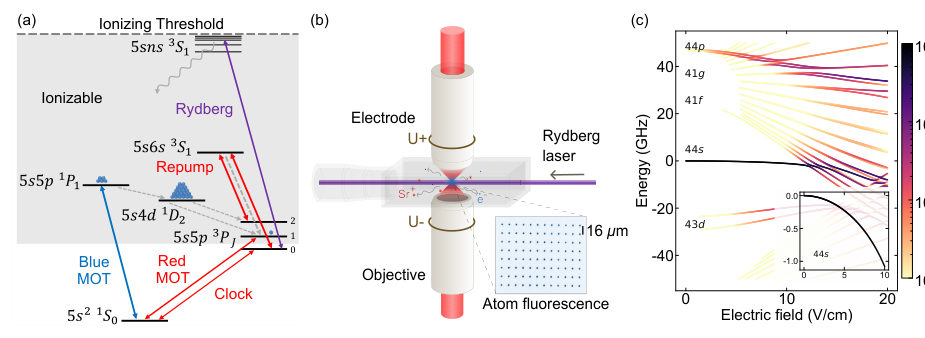
<figcaption class="paper-figure-caption"><b>Fig 1.</b> FIG. 1. Illustration of the neutralization protocol by ionizing laser-cooled atoms. (a) Relevant energy levels of 88Sr atoms. The Rydberg laser can directly photo-ionize atoms in states within the shaded region, which are continuously populated during the blue-MOT operation. The blue spheres correspond to their approximate steady-state population ratio. (b) Experimental layout. A Rydberg laser from the side can ionize atoms captured in a blue-MOT inside a Fused-silica glass cell. In addition to the stray electric field, a controlled field can be generated by applying static voltages over external loop wires wound around the objective to benchmark the neutralization effects. (Inset) Average...</figcaption>
</figure>
<figure class="paper-figure-card">
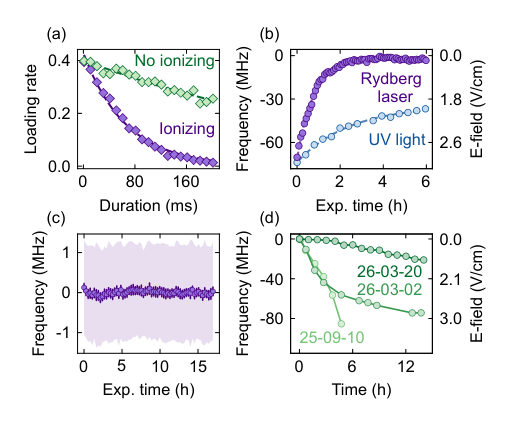
<figcaption class="paper-figure-caption"><b>Fig 2.</b> FIG. 3. Efficient stray electric field removal with photo- ionization of laser-cooled atoms in a MOT monitored with the 44s Rydberg state. (a) Lifetime of the atoms in the blue-MOT after interrupting the pre-cooled atom flux. The tweezer loading rate indicates how many atoms remain in the MOT, showing that the Rydberg laser rapidly depletes them. (b) Reduction in the stray electric field under a fixed ioniza- tion duration by either the Rydberg laser or the UV light starting from the same stray field. (c) Stability in the Ryd- berg resonance frequency after field neutralization, which is better than ±0.1 MHz. The grey background corresponds to the full width at half maximum (FWHM) of the...</figcaption>
</figure>
<figure class="paper-figure-card">
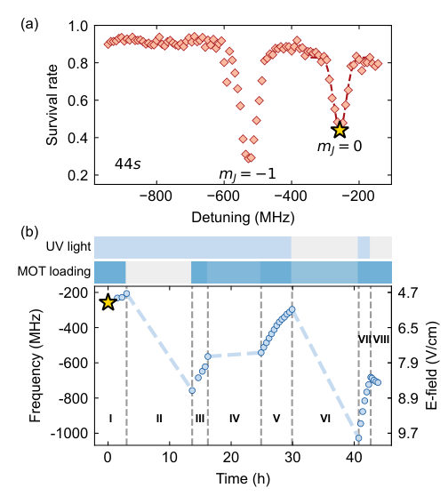
<figcaption class="paper-figure-caption"><b>Fig 3.</b> FIG. 2. Monitoring the drifts of the 5s5p 3P0 ↔5s44s 3S1 transition frequency under stray electric field. (a) First clearly resolved resonances of the target transition. The splitting be- tween the observed resonances matched the expected Zeeman splitting of the 3S1 Rydberg state under a magnetic field of 100 G. (b) Drifts in the resonance frequency of the mJ = 0 state under different conditions. Each data point corresponds to a single spectroscopic scan; for time intervals without data points, no spectroscopic scan was performed. The grayness of the UV light or MOT loading indicates whether the light is on or off, or the sequence’s duty cycle. One can clearly observe that when MOT loading...</figcaption>
</figure>
<figure class="paper-figure-card">
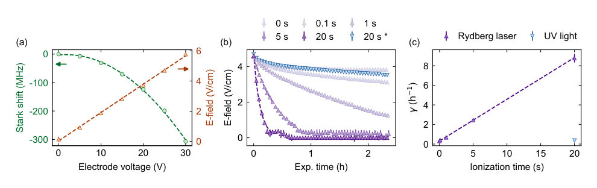
<figcaption class="paper-figure-caption"><b>Fig 4.</b> FIG. 4. Benchmark of the photo-ionization neutralization of an externally applied electric field using the 5s5p 3P0 ↔5s44s 3S1 Rydberg transition. (a) Calibration of the electric field strength using the Stark shift of the Rydberg transition frequency. (b) In a fixed external electric field, we compared the neutralization effects across variable ionization durations at a fixed repetition rate for each spectrum measurement. The triangle with an asterisk shows the measurement with UV light illumination for comparison. (c) Exponential decrease rate in the electric field versus photo-ionization time in (b). The neutralization rate shows a nicely linear dependence on the Rydberg laser duration....</figcaption>
</figure>
<figure class="paper-figure-card">
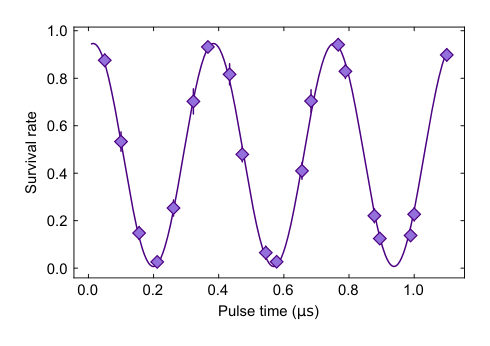
<figcaption class="paper-figure-caption"><b>Fig 5.</b> FIG. 5. Single-atom Rabi oscillation on the 5s5p 3P0 ↔ 5s61s 3S1 transition after eliminating the stray electric field. The atoms were randomly loaded into a 1D tweezer array with 12 sites, spaced 16 µm apart, arranged along the direction of the Rydberg excitation beam. The error bar denotes the standard deviation from 20 measurements.</figcaption>
</figure>
</div>

<p><strong>Summary.</strong> The research addresses the critical challenge of stray electric fields corrupting measurements on highly sensitive Rydberg atoms. The authors introduce and experimentally validate a novel method that uses photo-ionization to generate an in-vacuum plasma capable of neutralizing these detrimental fields. This technique restores spectral coherence, enabling reliable quantum control experiments on trapped Rydberg arrays.</p>
<p><strong>Why it may be interesting.</strong> This work provides a crucial, practical technique for mitigating environmental noise (static/DC electric fields) in advanced Rydberg quantum simulations, directly impacting the feasibility of high-fidelity quantum control experiments.</p>
<details>
<summary>Detailed structure</summary>
<p><strong>Main problem.</strong> Uncontrolled stray electric fields severely degrade quantum control experiments involving highly sensitive Rydberg atoms.</p>
<p><strong>Main result.</strong> The authors demonstrated a universal method using in-vacuum plasma generation to efficiently eliminate detrimental stray electric fields, restoring stable and coherent excitation of individual Rydberg states.</p>
<p><strong>Method.</strong> They employ photo-ionization by laser-cooled atoms to create an in-vacuum plasma source that neutralizes the ambient electric field, which is then verified by monitoring spectroscopic shifts.</p>
<p><strong>Model / system.</strong> The experiment uses Strontium (Sr) Rydberg atoms trapped in an optical tweezer array platform. The system's sensitivity arises from the large dipole moments of highly excited Rydberg states ($n \gg 1$).</p>
<p><strong>Key observables.</strong> Rydberg state resonance frequency shifts, Rabi oscillation frequencies, and spectral homogeneity across the atom array.</p>
<p><strong>Important parameters / regimes.</strong> Stray electric field strength (initially $>10 	ext{ V/cm}$), ionization rates ($\sim 10^3$ ion-electron pairs per ms), and coherence time constants.</p>
<p><strong>Assumptions / limitations.</strong> The initial stray fields are attributed to material properties of the vacuum cell, and the plasma generation mechanism is robustly controllable for field neutralization.</p>
<p><strong>Figures summary.</strong> Figures illustrate the experimental setup (Rydberg laser ionizing atoms in a MOT), show resonance frequency shifts confirming field dependence, and finally display uniform site-resolved spectra after successful field elimination.</p>
<p><strong>Paper structure.</strong> The paper progresses from identifying the problem of stray fields causing spectral distortion to presenting the novel plasma neutralization protocol. It then validates this by showing recovery of coherent Rabi oscillations and achieving highly homogeneous excitation across the array.</p>
</details>
<details>
<summary>Abstract</summary>
<p>Rydberg atoms are highly sensitive to external electric fields due to their exaggerated electronic properties. This unique feature lays the foundation for many of their applications in quantum science. However, an uncontrolled stray electric field can be detrimental, severely degrading their quantum control. In this work, we demonstrate a universal scheme that relies on the efficient creation of an in-vacuum plasma source by photo-ionizing laser-cooled atoms to eliminate detrimental electric fields in a Rydberg-atom tweezer array platform, requiring only readily available resources. With this method, we began with a Stark-ionized Rydberg continuum spectrum caused by a large, unknown stray electric field and ultimately recovered stable, coherent excitation of an individual Rydberg state after fully eliminating the field. Our method is directly applicable to existing Rydberg-atom platforms and can also be useful in other experiments sensitive to stray electric fields.</p>
</details>
<p><sub><a href="#top">↑ back to top</a></sub></p>

<p><a id="paper-2607.08713"></a></p>
<h3 id="approaching-carnot-efficiency-at-finite-power-in-an-experimentally-feasible-quantum-heat-engine"><a href="http://arxiv.org/abs/2607.08713v1">Approaching Carnot Efficiency at Finite Power in an Experimentally Feasible Quantum Heat Engine</a></h3>
<p><strong>Authors:</strong> Shogo Toma, Atsushi Noguchi, Ken Funo, Hiroyasu Tajima<br>
<strong>Type:</strong> both · <strong>Category:</strong> statistical mechanics · <strong>PDF:</strong> <a href="https://arxiv.org/pdf/2607.08713v1">https://arxiv.org/pdf/2607.08713v1</a><br>
<strong>Analysis basis:</strong> full PDF text, analyzed in chunks
<strong>Topic relevance:</strong> 🔥 <code>QC/QI experiment</code> <strong>4/5</strong> · 🔥 <code>methods for driven-dissipative</code> <strong>4/5</strong> · <code>Tavis-Cummings &amp; cavity-many-emitter</code> <strong>3/5</strong> · <code>correlated cavity matter</code> <strong>3/5</strong> · <code>driven-dissipative phase transition</code> <strong>3/5</strong> · <code>quantum optics experiment</code> <strong>3/5</strong> · <code>analog quantum simulation</code> <strong>2/5</strong> · <code>correlated / nonlocal dissipation</code> <strong>2/5</strong> · <code>non-equilibrium dynamics</code> <strong>2/5</strong> · <code>non-equilibrium universality</code> <strong>2/5</strong> · <code>Keldysh / 2PI / non-Gaussian methods</code> <strong>1/5</strong> · <code>entanglement &amp; information structure</code> <strong>1/5</strong> · <code>quantum measurements</code> <strong>1/5</strong></p>
<div class="figure-strip-hint">↔ Scroll figures horizontally</div>
<div class="paper-figures-scroll">
<figure class="paper-figure-card">
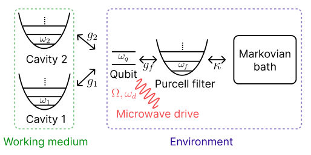
<figcaption class="paper-figure-caption"><b>Fig 1.</b> FIG. 1. Schematic illustration of the experimental setup.</figcaption>
</figure>
<figure class="paper-figure-card">
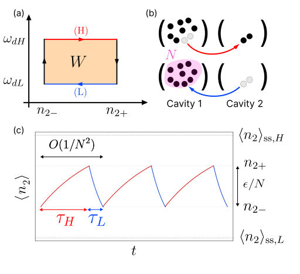
<figcaption class="paper-figure-caption"><b>Fig 2.</b> FIG. 2. Two-stroke cycle of the CAS-2 engine. (a) Di- agram of the cycle in the (⟨n2⟩, ωd) plane. The area en- closed by the loop gives the work output per cycle, W = (ℏ/2)(ωdH −ωdL) ∆⟨n2⟩H [cf. Eq. (12)]. (b) Schematic of the photon exchange realized by the CAS-2 process. Two photons are transferred from cavity 1 to cavity 2 during stroke (H) (red arrow) and back during stroke (L) (blue arrow), while the to- tal photon number N = n1 + n2 is conserved. (c) Dynamics of ⟨n2⟩during the first three cycles for N = 2. Red and blue segments correspond to strokes (H) and (L), respectively.</figcaption>
</figure>
<figure class="paper-figure-card">
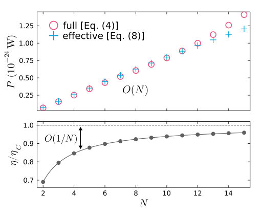
<figcaption class="paper-figure-caption"><b>Fig 3.</b> FIG. 3. Numerical calculations of the CAS-2 engine perfor- mance, obtained by directly integrating the full master equa- tion [Eq. (4)]. Power and efficiency, evaluated after ten cy- cles, as functions of the total photon number N = 2, 3, . . . , 15. They exhibit the predicted scalings P = O(N) and ηC −η = O(1/N), respectively. The magenta markers show the power obtained from the full master equation [Eq. (4)], while the light-blue markers show the power obtained from the effective dynamics [Eq. (8)] based on the Schrieffer–Wolff transforma- tion up to fifth order. The efficiency η is fixed by the choice of ωqν [Eq. (14)] and is therefore common to both descriptions. All parameters,...</figcaption>
</figure>
</div>

<p><strong>Summary.</strong> This paper shows that by engineering collective enhancement mechanisms in a superconducting circuit heat engine, one can circumvent the classical power-efficiency trade-off. The authors demonstrate that the engine can approach Carnot efficiency while still producing finite power, confirming theoretical predictions using an implementable quantum platform.</p>
<p><strong>Why it may be interesting.</strong> This work directly connects abstract thermodynamic bounds in finite-time physics to a concrete, experimentally realizable platform (circuit-QED), providing a blueprint for designing quantum devices based on enhanced dissipative processes.</p>
<details>
<summary>Detailed structure</summary>
<p><strong>Main problem.</strong> The research addresses the fundamental question of whether a quantum heat engine can approach Carnot efficiency while operating at finite power, overcoming limitations faced by classical Markovian engines.</p>
<p><strong>Main result.</strong> The authors demonstrate that using a superconducting-circuit platform and exploiting collective enhancement mechanisms allows the engine to achieve $\eta = \eta_C - O(1/N)$ while maintaining $P = O(N)$.</p>
<p><strong>Method.</strong> The work combines theoretical derivation of thermodynamic quantities (heat, work) with numerical simulation on an effective quantum master equation describing the working medium.</p>
<p><strong>Model / system.</strong> The system is a superconducting-circuit heat engine utilizing two coupled cavities and a qubit, emulating collective enhancement via a coupler-assisted swap (CAS-$c$) interaction. The dynamics are modeled using the GKSL equation under various approximations.</p>
<p><strong>Key observables.</strong> Efficiency ($\eta$), Power ($P$), Heat current ($J$), Work rate ($\dot{W}$), and Entropy production ($\Sigma$).</p>
<p><strong>Important parameters / regimes.</strong> The scaling parameter $N$ (total photon number) is crucial, as the result holds in the limit where $\eta - \eta_C = O(1/N)$ and $P = O(N)$.</p>
<p><strong>Assumptions / limitations.</strong> Key approximations include the Born–Markov approximation, adiabatic elimination of auxiliary cavities, and operating within specific dispersive parameter regimes.</p>
<p><strong>Figures summary.</strong> Figures illustrate the setup (cavities, qubit), the two-stroke cycle protocol in phase space, and numerical confirmation showing $P \propto N$ and $\eta_C - \eta \propto 1/N$.</p>
<p><strong>Paper structure.</strong> The paper progresses from establishing the classical power-efficiency trade-off to proposing a quantum mechanism (CAS-$c$), deriving an effective master equation for the working medium, and finally demonstrating analytically and numerically that this mechanism achieves the desired scaling limits.</p>
</details>
<details>
<summary>Abstract</summary>
<p>Whether a heat engine can approach Carnot efficiency while maintaining finite power is a fundamental question in finite-time thermodynamics. For classical Markovian heat engines with local interactions, the power-efficiency trade-off forbids an asymptotic approach to Carnot efficiency at finite power. In quantum systems, by contrast, degeneracy, symmetry, and collective jumps have been theoretically predicted to enable such an asymptotic attainment by enhancing activity. It has remained open, however, whether this mechanism can be realized in an experimentally implementable heat engine. In this Letter, we propose a superconducting-circuit heat engine that emulates the collective enhancement, thereby enabling an asymptotic approach to Carnot efficiency at finite power. This result demonstrates that, in an implementable model, such an enhanced dissipative mechanism circumvents the power-efficiency trade-off of classical Markovian engines. Our work connects abstract bounds in finite-time thermodynamics to a concrete circuit-QED platform and suggests a route toward quantum-device design based on collectively enhanced dissipative processes.</p>
</details>
<p><sub><a href="#top">↑ back to top</a></sub></p>

<p><a id="paper-2607.08078"></a></p>
<h3 id="experimental-demonstration-of-entanglement-sudden-death-induced-by-natural-dissipation"><a href="http://arxiv.org/abs/2607.08078v1">Experimental demonstration of entanglement sudden death induced by natural dissipation</a></h3>
<p><strong>Authors:</strong> Yan Wang, Hao-Long Zhang, Jia-Hao Lü, Ken Chen, Wen Ning, Li-Hua Lin, Zhen-Biao Yang, Shi-Biao Zheng<br>
<strong>Type:</strong> experiment · <strong>Category:</strong> other · <strong>PDF:</strong> <a href="https://arxiv.org/pdf/2607.08078v1">https://arxiv.org/pdf/2607.08078v1</a><br>
<strong>Analysis basis:</strong> full PDF text, analyzed in chunks
<strong>Topic relevance:</strong> 🔥 <code>correlated / nonlocal dissipation</code> <strong>4/5</strong> · 🔥 <code>entanglement &amp; information structure</code> <strong>4/5</strong> · <code>driven-dissipative phase transition</code> <strong>3/5</strong> · <code>methods for driven-dissipative</code> <strong>3/5</strong> · <code>quantum optics experiment</code> <strong>3/5</strong> · <code>Tavis-Cummings &amp; cavity-many-emitter</code> <strong>2/5</strong> · <code>analog quantum simulation</code> <strong>2/5</strong> · <code>correlated cavity matter</code> <strong>2/5</strong> · <code>non-equilibrium dynamics</code> <strong>2/5</strong> · <code>non-equilibrium universality</code> <strong>2/5</strong> · <code>Keldysh / 2PI / non-Gaussian methods</code> <strong>1/5</strong> · <code>QC/QI experiment</code> <strong>1/5</strong> · <code>measurement-induced transitions</code> <strong>1/5</strong></p>
<div class="figure-strip-hint">↔ Scroll figures horizontally</div>
<div class="paper-figures-scroll">
<figure class="paper-figure-card">
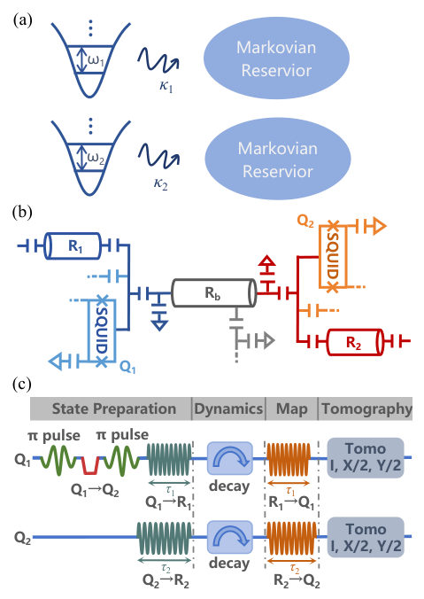
<figcaption class="paper-figure-caption"><b>Fig 1.</b> FIG. 1. (color online). (a) Schematic of the naturally dissipa- tive dynamics. Each of the two initially entangled photonic modes is individually coupled to a Markovian reservoir. The dissipation process is characterized by an irreversible pho- tonic decay with the rate κj. (b) Experimental system. The disentanglement dynamics is tested with a circuit, where the readout resonators of two superconducting qubits Q1 and Q2, denoted as R1 and R2, act as the system photonic modes. Q1 and Q2, connected by a bus resonator (Rb), serve as an- cilla qubits for preparing the initial entangled state of R1 and R2, and for measuring their output state. (c) Experimental pulse. The experiment involves...</figcaption>
</figure>
<figure class="paper-figure-card">
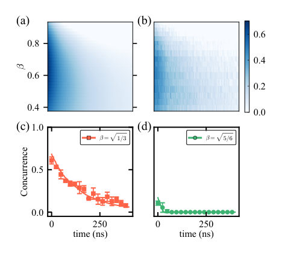
<figcaption class="paper-figure-caption"><b>Fig 2.</b> FIG. 2. (color online). (a) Simulated concurrence versus β and t. (b) Measured concurrence versus β and t. (c), (d) Evolutions of the measured concurrence for β = p</figcaption>
</figure>
<figure class="paper-figure-card">
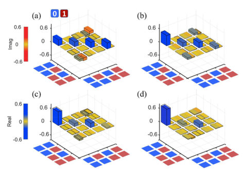
<figcaption class="paper-figure-caption"><b>Fig 3.</b> FIG. 3. (color online). (a)-(d) R1-R2 density matrices mea- sured for disentanglement times t = 100, 200, 300, and 400 ns. The results are obtained for β = p</figcaption>
</figure>
<figure class="paper-figure-card">
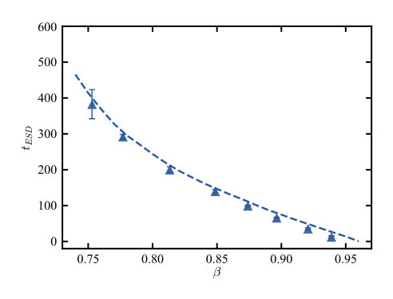
<figcaption class="paper-figure-caption"><b>Fig 4.</b> FIG. 5. (color online). ESD time (tESD) versus β. For each value of β, tESD is equal to the transverse coordinate of the cross point between the observed |ρ00,11| and ρ01,01 10,10 as func- tions of t. The dashed lines are the results calculated with the master equation.</figcaption>
</figure>
<figure class="paper-figure-card">
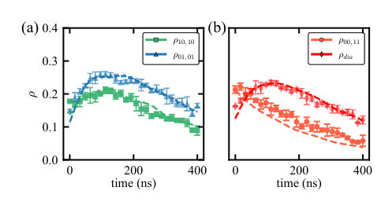
<figcaption class="paper-figure-caption"><b>Fig 5.</b> FIG. 4. (color online). (a) Observed evolutions of the diag- onal elements ρ10,10 and ρ01,01. (b) Observed evolutions of |ρ00,11| and ρdia = √ρ10,10ρ01,01. The results are obtained for β = p</figcaption>
</figure>
</div>

<p><strong>Summary.</strong> The authors experimentally demonstrated Entanglement Sudden Death (ESD) for two photonic qubits using superconducting circuit resonators. By monitoring entanglement decay under natural dissipation from leaky environments, they confirmed that entanglement can vanish in finite time even when the underlying photon loss is asymptotic. This work validates a key theoretical prediction regarding decoherence in realistic quantum hardware.</p>
<p><strong>Why it may be interesting.</strong> This work provides a crucial experimental confirmation of a non-trivial quantum phenomenon (ESD) in a realistic, naturally dissipative environment, advancing the field of open quantum systems beyond idealized artificial channels.</p>
<details>
<summary>Detailed structure</summary>
<p><strong>Main problem.</strong> The primary goal was to experimentally demonstrate Entanglement Sudden Death (ESD) induced by natural environmental dissipation in a quantum system.</p>
<p><strong>Main result.</strong> The experiment successfully demonstrated that the entanglement between two photonic qubits decays completely to zero within a finite time due to coupling with natural leaky resonators, confirming ESD.</p>
<p><strong>Method.</strong> The researchers used a circuit QED platform involving superconducting qubits and leaky microwave resonators to prepare entangled states and monitor their decay dynamics.</p>
<p><strong>Model / system.</strong> The system consists of two photonic qubits stored in leaky resonators coupled to superconducting circuits. The evolution is governed by a Lindblad master equation, modeling interaction with a Markovian reservoir.</p>
<p><strong>Key observables.</strong> Concurrence ($C$), which quantifies entanglement; density matrix elements ($
ho_{10,10}, 
ho_{01,01}$); and the time-dependent decay of these quantities.</p>
<p><strong>Important parameters / regimes.</strong> Photonic decay rates ($\kappa_1, \kappa_2$); resonator frequencies ($\omega_{r1}, \omega_{r2}$); and the initial entanglement strength parameter ($eta$).</p>
<p><strong>Assumptions / limitations.</strong> The analysis relies on the Born-Markov approximation for modeling environmental coupling.</p>
<p><strong>Figures summary.</strong> Figures illustrate schematics of the setup, pulse sequences, measured concurrence decay showing a sudden drop to zero (ESD), and time evolution plots of density matrix elements.</p>
<p><strong>Paper structure.</strong> The paper details the physical setup using superconducting circuits, describes state preparation via controlled coupling, models the dynamics using master equations, measures entanglement decay over time, and compares results against theoretical predictions for ESD.</p>
</details>
<details>
<summary>Abstract</summary>
<p>Any quantum system inevitably interacts with its natural environment, which can be modeled as a Markovian reservoir consisting of a continuum of electromagnetic field modes. The quantum coherence of qubits in a zero-temperature natural reservoir decays asymptotically, whereas the quantum entanglement of two qubits coupled to such reservoirs may disappear in a finite time. This phenomenon, referred to as entanglement sudden death (ESD), has been simulated with artificially engineered dissipative channels, but ESD induced by natural dissipative channels has not been confirmed. We here present the first demonstration of natural-dissipation-induced ESD for two photonic qubits, each stored in a leaky resonator of a superconducting circuit. The disentanglement dynamics of the two photonic qubits is monitored with two ancilla superconducting qubits, which can be controllably coupled to the corresponding leaky resonators. The techniques developed in our experiment pave the way for experimental exploration of entanglement dynamics in natural environments.</p>
</details>
<p><sub><a href="#top">↑ back to top</a></sub></p>

<p><a id="paper-2607.07801"></a></p>
<h3 id="topology-from-decoherence"><a href="http://arxiv.org/abs/2607.07801v1">Topology from Decoherence</a></h3>
<p><strong>Authors:</strong> Alexandre Chaduteau, Derek Lee, Frank Schindler, Abhinav Prem<br>
<strong>Type:</strong> theory · <strong>Category:</strong> other · <strong>PDF:</strong> <a href="https://arxiv.org/pdf/2607.07801v1">https://arxiv.org/pdf/2607.07801v1</a><br>
<strong>Analysis basis:</strong> full PDF text, analyzed in chunks
<strong>Topic relevance:</strong> 🔥 <code>driven-dissipative phase transition</code> <strong>4/5</strong> · 🔥 <code>methods for driven-dissipative</code> <strong>4/5</strong> · <code>analog quantum simulation</code> <strong>3/5</strong> · <code>correlated / nonlocal dissipation</code> <strong>3/5</strong> · <code>non-equilibrium dynamics</code> <strong>3/5</strong> · <code>non-equilibrium universality</code> <strong>3/5</strong> · <code>Keldysh / 2PI / non-Gaussian methods</code> <strong>2/5</strong> · <code>measurement-induced transitions</code> <strong>2/5</strong> · <code>Kondo &amp; dissipative impurity</code> <strong>1/5</strong> · <code>entanglement &amp; information structure</code> <strong>1/5</strong> · <code>exotic spin models in light-matter</code> <strong>1/5</strong> · <code>scars &amp; prethermalization</code> <strong>1/5</strong></p>
<div class="figure-strip-hint">↔ Scroll figures horizontally</div>
<div class="paper-figures-scroll">
<figure class="paper-figure-card">
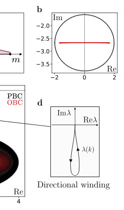
<figcaption class="paper-figure-caption"><b>Fig 1.</b> FIG. 1. Decoherence-induced topology in a lattice model. a. Schematic of the proposed model [see Eq. (1)]. The Hamiltonian drives reciprocal coherent hopping with strength t. The jumps are Km = Anm + Bjm, with on-site density nm at site m and current jm between sites m and m + 1. b. Complex eigenspectrum of the single-particle sector generator Θ for t = 1, A = 2.2, B = 0.5 and N = 100. In PBC (black), the spectrum displays a point gap [20, 21], causing a non-Hermitian skin effect in the single- particle eigenstates of the Lindbladian. c. Eigenspectrum of the two-particle sector generator ˆC for the same parameters. We observe two parts: the “continuous” spectrum [22] corresponding to...</figcaption>
</figure>
<figure class="paper-figure-card">
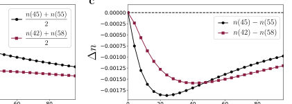
<figcaption class="paper-figure-caption"><b>Fig 2.</b> FIG. 2. Robust asymmetric diffusion. a. At time τ = 0, we perturb the steady state’s correlation matrix with a diagonal matrix that forms a Gaussian profile, with center at the middle of the chain (N = 100 here). We then numerically time-evolve according to Eq. (3). b. Corresponding time evolution for average densities located symmetrically from the middle. These relax back toward the same steady-state value. c. Time evolution of the difference between the same densities. We observe asymmetric diffusion, which is a consequence of the decohered band. The large characteristic timescale matches the ˆC point gap being connected to the steady state. The scale of asymmetric diffusion does not...</figcaption>
</figure>
<figure class="paper-figure-card">
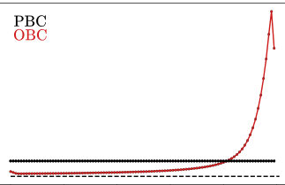
<figcaption class="paper-figure-caption"><b>Fig 3.</b> FIG. 3. Decoherence-induced skin effect. a. Schematic of the PBC point gap (black) of the ˆC spectrum for our model [see Eq. (1)]. The spectrum winds against k in the complex plane. In semi-infinite bound- ary conditions (i.e. with one edge), the bulk-boundary correspondence [21] guarantees the existence of a “boundary” mode (blue point), with density localized at the edge, at any point λ ∈C around which the PBC winding ν(λ) ̸= 0. Decohered states are most localized at the bottom of the point gap, as reflected by the color gradient. b. Localization P</figcaption>
</figure>
<figure class="paper-figure-card">
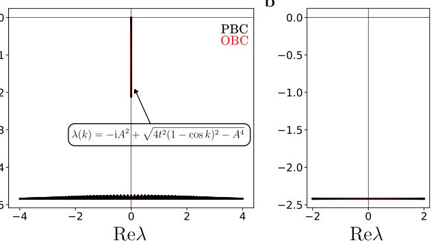
<figcaption class="paper-figure-caption"><b>Fig 4.</b> FIG. 1. Spectrum of the model without current measurements. a. Spectrum of ˆC for t = 1, A = 2.2, B = 0. When B = 0, the model obeys inversion symmetry [Eq. (39)] and the point gap is closed. Focusing on decohered-state eigenvalues, these match exactly the ones derived via Green’s functions [Sec. III B]. b. Spectrum of Θ, for which the point gap is closed as well, as expected from its hoppings involving t ± AB</figcaption>
</figure>
<figure class="paper-figure-card">
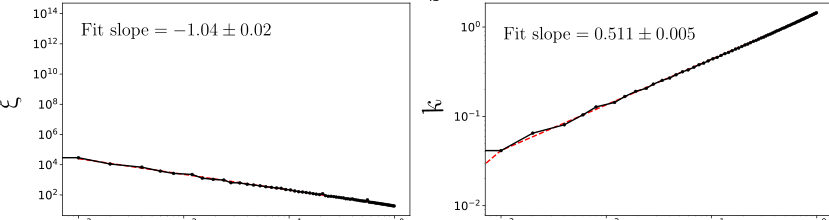
<figcaption class="paper-figure-caption"><b>Fig 5.</b> FIG. 2. Numerical fits of the localization length ξ (a) and the oscillation wavevector k (b) of decohered eigenmodes near the steady state in OBC. Parameters are the same as in Fig. 1 of the main text, i.e. t = 1, A = 2.2, B = 0.5. We fit the spatial profile of eigenmodes via the density ni. The fit slopes roughly match the second-order predictions from Eq. (63).</figcaption>
</figure>
</div>

<p><strong>Summary.</strong> The authors demonstrate that decoherence, usually viewed as detrimental, can actually induce robust topological phases in interacting many-body systems. By analyzing the evolution of correlation matrices under a Lindblad master equation, they show that the noise generates spectral features like point gaps and winding numbers. This leads to observable physical consequences, such as asymmetric diffusion whose direction is dictated by the system's topology.</p>
<p><strong>Why it may be interesting.</strong> This work provides a concrete theoretical mechanism showing that non-Hermitian physics and topological invariants can emerge purely from open system dynamics (stochastic noise) rather than being imposed by an effective Hamiltonian, which is highly relevant for understanding realistic quantum devices subject to dissipation.</p>
<details>
<summary>Detailed structure</summary>
<p><strong>Main problem.</strong> To investigate whether decoherence, conventionally seen as an obstacle to topology, can instead induce topological phenomena in interacting many-body systems.</p>
<p><strong>Main result.</strong> The noise-averaged dynamics realize a topological phase characterized by a winding number and the non-Hermitian skin effect. This is manifested dynamically through asymmetric diffusion fixed by the system's interactions.</p>
<p><strong>Method.</strong> Analysis involves solving the equation of motion for two-particle correlation matrices derived from the Lindblad master equation, utilizing momentum-space representations and spectral analysis (winding numbers).</p>
<p><strong>Model / system.</strong> The model is a 1D lattice system of spinless fermions whose time evolution is governed by a Lindblad equation incorporating both coherent Hamiltonian dynamics and environment-induced dephasing jumps. The complexity arises from the interaction terms in the noise operators.</p>
<p><strong>Key observables.</strong> Asymmetric diffusion, winding number ($
u$), non-Hermitian skin effect, and the spectrum of the superoperator $\hat{C}$.</p>
<p><strong>Important parameters / regimes.</strong> Interaction strength (related to $B$ parameter), lattice hopping ($t$), and system size ($N$).</p>
<p><strong>Assumptions / limitations.</strong> The analysis relies on tracking correlation matrices via a linear evolution equation in the superoperator space, requiring various truncations of the infinite-dimensional problem.</p>
<p><strong>Figures summary.</strong> Figures illustrate the spectral structure (point gaps) in both single-particle and two-particle sectors, demonstrating how non-zero winding numbers guarantee boundary modes (skin effect) and asymmetric diffusion in time evolution.</p>
<p><strong>Paper structure.</strong> The paper progresses from establishing the general framework using the Lindblad equation for correlation matrices to analyzing symmetries and spectral properties in momentum space. It then details how breaking inversion symmetry opens a point gap, leading to the prediction of skin effects and finally demonstrating the resulting asymmetric diffusion in long-time dynamics.</p>
</details>
<details>
<summary>Abstract</summary>
<p>Decoherence is conventionally regarded as an obstacle to realizing topological quantum phases. This has motivated extensive efforts to suppress noise in candidate topological materials and devices. Here, we show that decoherence can instead induce topological phenomena. We demonstrate this in a lattice system subject to environment-induced dephasing. The noise-averaged dynamics, governed by an interacting quantum master equation, realize a topological phase characterized by a winding number and the non-Hermitian skin effect. The dynamical consequence is striking: the correlated nature of the stochastic noise yields asymmetric diffusion, whose direction is fixed by the winding number and is reversible only through a topological phase transition. This effect is induced purely by interactions, distinguishing it from previous studies of free, effectively single-particle systems. It also disappears upon postselecting measurement outcomes, confirming that it is a genuinely open-system phenomenon with no effective Hamiltonian description. Remarkably, the model remains analytically tractable. Our results establish correlated quantum noise as a route to topology in open many-body systems, beyond free-particle and non-Hermitian Hamiltonian paradigms.</p>
</details>
<p><sub><a href="#top">↑ back to top</a></sub></p>

<p><a id="paper-2607.08627"></a></p>
<h3 id="stochastic-dynamics-of-particles-in-correlated-fields"><a href="http://arxiv.org/abs/2607.08627v1">Stochastic dynamics of particles in correlated fields</a></h3>
<p><strong>Authors:</strong> Andrea Gambassi<br>
<strong>Type:</strong> theory · <strong>Category:</strong> statistical mechanics · <strong>PDF:</strong> <a href="https://arxiv.org/pdf/2607.08627v1">https://arxiv.org/pdf/2607.08627v1</a><br>
<strong>Analysis basis:</strong> full PDF text, analyzed in chunks
<strong>Topic relevance:</strong> 🔥 <code>Keldysh / 2PI / non-Gaussian methods</code> <strong>4/5</strong> · <code>correlated / nonlocal dissipation</code> <strong>3/5</strong> · <code>driven-dissipative phase transition</code> <strong>3/5</strong> · <code>methods for driven-dissipative</code> <strong>3/5</strong> · <code>non-equilibrium dynamics</code> <strong>3/5</strong> · <code>Frenkel-Kontorova</code> <strong>2/5</strong> · <code>non-equilibrium universality</code> <strong>2/5</strong> · <code>Kondo &amp; dissipative impurity</code> <strong>1/5</strong> · <code>analog quantum simulation</code> <strong>1/5</strong> · <code>scars &amp; prethermalization</code> <strong>1/5</strong></p>
<div class="figure-strip-hint">↔ Scroll figures horizontally</div>
<div class="paper-figures-scroll">
<figure class="paper-figure-card">
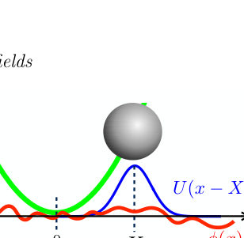
<figcaption class="paper-figure-caption"><b>Fig 1.</b> Figure 1. Left: Schematic representation of a colloidal probe confined by an optical harmonic trap and interacting with a fluctuating field ϕ, the fluctuations of which are correlated across a distance set by the correlation length ξ. Right: The colloidal probe at a certain position X is modelled by a particle (gray) in linear interaction with the field ϕ(x) (red) at position x via a potential U(x−X) (blue), see Eq. (7). The particle is also subject to a harmonic potential (green), with the minimum at X = 0. (The left panel is adapted from Ref. [18].)</figcaption>
</figure>
<figure class="paper-figure-card">
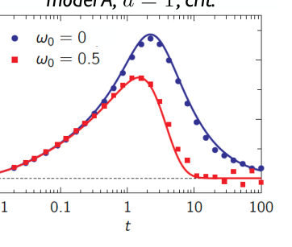
<figcaption class="paper-figure-caption"><b>Fig 2.</b> Figure 2. Left: Power spectral density S(ω) of the position of the particle in a field with model B dynamics in d = 3 and various values of the distance r from the critical point r = 0, as obtained analytically from a perturbative calculation at order λ2 (with λ = 0.05 for illustration). Upon approaching the critical point, the algebraic behaviour ∼ω−1+d/4 emerges for ω →0 (dashed line on the left) , while the behaviour ∼ω−2</figcaption>
</figure>
<figure class="paper-figure-card">
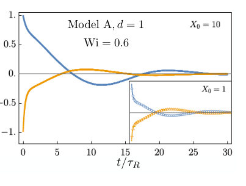
<figcaption class="paper-figure-caption"><b>Fig 3.</b> Figure 3. Relaxation of the average position ⟨X(t)⟩of the particle in the reference frame co-moving with the trap, after a displacement at t = 0 of amplitude X0 from the position of mechanical equilibrium in the steady state. The particle interacts with a critical Gaussian field in d = 1 and model A dynamics. Left: Dependence of the relaxation on the dimensionless velocity Wi ∝v of the trap. The symbols are the analytical predictions within the linearised dynamics, obtained by inverting the Laplace transform in Eq. (17), which are in good agreement with the result of numerical simulations, indicated by the solid lines. The parameters used in the simulations are λ = 5, R = 5, γ∞= 0.2, κ =...</figcaption>
</figure>
<figure class="paper-figure-card">

<figcaption class="paper-figure-caption"><b>Fig 4.</b> Figure 4. Sketch of the relevant degrees of freedom which intervene in the stochastic thermodynamics of the system consisting of the field ϕ in interaction with a particle Y subject to a time-dependent potential U, with the particle and the field in contact with an equilibrium thermal bath at temperature T. The field-particle interaction Hint (see the text) can store energy. In particular, the particle and the field exchange heats ¯dQy and ¯dQϕ with the thermal bath, while the external force exerts a work ¯dW on the particle. The particle and the field exchange energies ¯dW int y and ¯dW int ϕ , respectively, via their interaction, which may also change Hint. The modes of the field are...</figcaption>
</figure>
<figure class="paper-figure-card">

<figcaption class="paper-figure-caption"><b>Fig 5.</b> Figure 5. Spatial distribution of the heat absorption rate ⟨˙Qϕ(x)⟩of the field from the thermal bath, in a frame co-moving with the particle driven at velocity v along the horizontal direction, in spatial dimensions d = 2. The particle is driven horizontally to the right with velocity v, while the Gaussian field evolves with model A dynamics. The particle is assumed to have U(x) = exp  −x2/(2R)  with radius R = 4, indicated by the dash-dotted lines in the various panels. The heat map is the result of the numerical simulation of the dynamics of the system (see Ref. [23] for details), with an increasing value of the ratio ξ/R from 0.1 on the left to 8 on the right, where ξ is the...</figcaption>
</figure>
</div>

<p><strong>Summary.</strong> This work investigates the complex stochastic dynamics of particles in correlated fluctuating environments, showing that simple linear models fail due to memory effects. By deriving generalized Langevin equations, the authors characterize anomalous diffusion regimes—including superdiffusion and run-and-tumble motion—that arise from both external correlations and self-generated fields.</p>
<p><strong>Why it may be interesting.</strong> It provides advanced theoretical tools for modeling open quantum systems where dissipation and memory effects are crucial, linking concepts from condensed matter (viscoelasticity) to particle transport phenomena.</p>
<details>
<summary>Detailed structure</summary>
<p><strong>Main problem.</strong> The study addresses how the effective dynamics of mesoscopic particles deviate from simple linear models when immersed in complex, fluctuating, or correlated media.</p>
<p><strong>Main result.</strong> The effective dynamics are generally non-linear and non-Markovian, exhibiting anomalous diffusion (e.g., superdiffusive behavior) depending on dimensionality and whether the field is self-generated or external.</p>
<p><strong>Method.</strong> Theoretical derivation using projection operator formalisms (like Mori-Zwanzig) and analyzing spectral densities $S(\omega)$ to characterize memory effects in generalized Langevin equations.</p>
<p><strong>Model / system.</strong> A probe particle interacting with a fluctuating, correlated Gaussian field $\phi(x)$. The system can be modeled by coupling the particle's motion to the bath dynamics, leading to non-Markovian friction kernels.</p>
<p><strong>Key observables.</strong> Mean Square Displacement (MSD), Power Spectral Density $S(\omega)$, and deviation from simple exponential decay in relaxation dynamics.</p>
<p><strong>Important parameters / regimes.</strong> Correlation length $\xi$, dimensionality $d$, coupling strength $\lambda$ (for self-interaction), and the memory kernel $\Gamma(t)$ or $F(t, x)$.</p>
<p><strong>Assumptions / limitations.</strong> The field is treated as Gaussian in some derivations; approximations are made regarding the bath dynamics to derive effective equations of motion.</p>
<p><strong>Figures summary.</strong> Figure 1 schematically shows a probe particle interacting with a correlated field $\phi$ confined by a trap. Figure 6 illustrates particle trajectories and associated field heatmaps for chemotaxis analysis.</p>
<p><strong>Paper structure.</strong> The paper progresses from reviewing the failure of simple linear Langevin models to deriving generalized, non-Markovian dynamics in coupled systems, culminating in specific analyses of self-chemotactic motion exhibiting dimension-dependent anomalous diffusion.</p>
</details>
<details>
<summary>Abstract</summary>
<p>The effective dynamics of a colloidal particle immersed in a complex medium at equilibrium is usually described in terms of a linear overdamped Langevin equation, possibly with memory. However, numerical simulations and experiments have shown that this linear model fails, suggesting that the effective dynamics of the probe is actually nonlinear. Focusing on the case in which the medium is described by a fluctuating and correlated Gaussian field, linearly coupled to the colloid, we derive this effective dynamics and discuss its various consequences, including those on the stochastic thermodynamics of a driven particle. When the field is generated by the particle itself, with negligible fluctuations, the resulting self-chemotactic dynamics turns out to display anomalous diffusion and run-and-tumble motion in low spatial dimension, which we characterise analytically.</p>
</details>
<p><sub><a href="#top">↑ back to top</a></sub></p>

<p><a id="paper-2607.08530"></a></p>
<h3 id="the-langevin-equation-description-of-optomechanics-with-the-dispersive-and-dissipative-optomechanical-coupling"><a href="http://arxiv.org/abs/2607.08530v1">The Langevin-equation description of optomechanics with the dispersive and dissipative optomechanical coupling</a></h3>
<p><strong>Authors:</strong> Alexander K. Tagantsev<br>
<strong>Type:</strong> theory · <strong>Category:</strong> other · <strong>PDF:</strong> <a href="https://arxiv.org/pdf/2607.08530v1">https://arxiv.org/pdf/2607.08530v1</a><br>
<strong>Analysis basis:</strong> full PDF text, analyzed in chunks
<strong>Topic relevance:</strong> 🔥 <code>methods for driven-dissipative</code> <strong>4/5</strong> · <code>Keldysh / 2PI / non-Gaussian methods</code> <strong>3/5</strong> · <code>correlated / nonlocal dissipation</code> <strong>3/5</strong> · <code>driven-dissipative phase transition</code> <strong>3/5</strong> · <code>correlated cavity matter</code> <strong>2/5</strong> · <code>non-equilibrium dynamics</code> <strong>2/5</strong> · <code>non-equilibrium universality</code> <strong>2/5</strong> · <code>quantum measurements</code> <strong>2/5</strong> · <code>interference shaping light</code> <strong>1/5</strong> · <code>measurement-induced transitions</code> <strong>1/5</strong></p>
<div class="figure-strip-hint">↔ Scroll figures horizontally</div>
<div class="paper-figures-scroll">
<figure class="paper-figure-card">

<figcaption class="paper-figure-caption"><b>Fig 1.</b> FIG. 1. Schematics of the one-sided Fabry-Perot cavity. The mirror shown with the dashed line is</figcaption>
</figure>
<figure class="paper-figure-card">

<figcaption class="paper-figure-caption"><b>Fig 2.</b> FIG. 2. Schematics of the modified Michelson-Sagnac interferometer. The running electromagnetic</figcaption>
</figure>
</div>

<p><strong>Summary.</strong> The paper compares the Input-Output (IO) approach with the Quantum Langevin equation formalism for optomechanical systems. It finds that while both methods describe dispersive coupling, the standard Langevin treatment incorrectly predicts dissipative coupling when decay rates depend on mechanical position. The authors conclude that a model-free IO analysis is necessary to correctly account for phase factors and the true physical origin of dissipation in these quantum optical setups.</p>
<p><strong>Why it may be interesting.</strong> This work provides a rigorous theoretical check on established methods in quantum optics, highlighting where simplified or model-dependent approaches (like standard L-formalism) break down when moving to more complex physical regimes involving dissipation.</p>
<details>
<summary>Detailed structure</summary>
<p><strong>Main problem.</strong> To critically assess the validity and range of applicability of the quantum Langevin equation formalism for describing optomechanical systems, especially when dissipative coupling is present.</p>
<p><strong>Main result.</strong> The Input-Output (IO) approach reveals that standard Langevin formalisms incorrectly predict the generation of dissipative optomechanical coupling when only cavity decay rate dependence on length is considered. Furthermore, L-formalism may miss a crucial phase factor when dissipative coupling is active.</p>
<p><strong>Method.</strong> The authors compare results derived from the model-free Input-Output (IO) relations approach (based on classical wave equations) against those obtained using the standard quantum Langevin equation formalism for various cavity setups.</p>
<p><strong>Model / system.</strong> The study focuses on optomechanical systems, specifically utilizing an optomechanical Fabry-Perot cavity and a modified Michelson-Sagnac interferometer where one mirror acts as a mechanical oscillator. The comparison involves analyzing coupling mechanisms (dispersive vs. dissipative).</p>
<p><strong>Key observables.</strong> Intracavity field ladder operator, stochastic back-action force spectral power density S(Omega), and the relation between input/output fields.</p>
<p><strong>Important parameters / regimes.</strong> Dissipative optomechanical coupling strength ($g_\gamma$), cavity decay rate ($\gamma$), mechanical oscillator position dependence of $\gamma$, and phase factors.</p>
<p><strong>Assumptions / limitations.</strong> The comparison relies on simplifying the IO-approach results to match the structure of the Langevin formalism, though discrepancies are found when dissipative effects are included.</p>
<p><strong>Paper structure.</strong> The paper first introduces the problem by comparing L-formalism and IO-formalism. It then details the application of both formalisms to specific cavities (Fabry-Perot, MMSI), deriving equations for field operators and backaction forces in each framework before drawing comparative conclusions regarding dissipative coupling.</p>
</details>
<details>
<summary>Abstract</summary>
<p>The description of the optomechanical system is commonly based on the quantum Langevin equation formalism. This framework is introduced phenomenologically or based on a model Hamiltonian. However, once dealing with the optomechanical Fabry-Perot cavity or the modified Michelson-Sagnac interferometer with a semitransparent mechanically active membrane inside, a model-free consideration is also possible by using an alternative approach. Such an approach, which is based on the classical wave equations in the systems, is popular in the gravitational-wave community where it is termed as input-output relations approach. In this work, using the aforementioned approach, we derived the equations for the ladder operator of the intracavity field, stochastic back-action force, and the relation between the fields at the input mirror. Then we simplified the obtained results down to the range of applicability of the Langevin equation formalism and compared these with the corresponding predictions of the latter formalism. This enabled us to critically assess the validity of the Langevin equation formalism and rectify its range of applicability. In the case where the dissipative optomechanical coupling is involved we identified appreciable problems with this formalism. We found that, disregarding the fact that decay rate of the optomechanical Fabry-Perot cavity depends on its length, no dissipative optomechanical coupling is generated. This is in contrast with the prediction of the standard Langevin-equation based treatment. We found that, staying inside the range of applicability of the Langevin equation formalism, the relation between the fields at the input mirror may not be correct. We found that the Langevin equation formalism misses a phase factor at the input field, this factor turns out to be important for the situation involving the dissipative optomechanical coupling.</p>
</details>
<p><sub><a href="#top">↑ back to top</a></sub></p>

<p><a id="paper-2607.07802"></a></p>
<h3 id="shortcuts-to-adiabaticity-for-non-hermitian-systems-in-krylov-space"><a href="http://arxiv.org/abs/2607.07802v1">Shortcuts to Adiabaticity for non-Hermitian systems in Krylov Space</a></h3>
<p><strong>Authors:</strong> Ankit W. Shrestha, Budhaditya Bhattacharjee, Adolfo del Campo<br>
<strong>Type:</strong> theory · <strong>Category:</strong> statistical mechanics · <strong>PDF:</strong> <a href="https://arxiv.org/pdf/2607.07802v1">https://arxiv.org/pdf/2607.07802v1</a><br>
<strong>Analysis basis:</strong> full PDF text, analyzed in chunks
<strong>Topic relevance:</strong> 🔥 <code>driven-dissipative phase transition</code> <strong>4/5</strong> · 🔥 <code>methods for driven-dissipative</code> <strong>4/5</strong> · <code>correlated / nonlocal dissipation</code> <strong>3/5</strong> · <code>non-equilibrium universality</code> <strong>3/5</strong> · <code>Kondo &amp; dissipative impurity</code> <strong>2/5</strong> · <code>analog quantum simulation</code> <strong>2/5</strong> · <code>non-equilibrium dynamics</code> <strong>2/5</strong> · <code>Keldysh / 2PI / non-Gaussian methods</code> <strong>1/5</strong></p>
<div class="figure-strip-hint">↔ Scroll figures horizontally</div>
<div class="paper-figures-scroll">
<figure class="paper-figure-card">

<figcaption class="paper-figure-caption"><b>Fig 1.</b> FIG. 1. Excess energy E(τ) at the end of different ramp time τ for the interacting Hatano-Nelson model for N = 10 with and without the counterdiabatic driving term (J = 1.0, U = 1.0, a = 1.0, and h0 = 0.1). AGP was truncated at M = 80, where the exact AGP would require M = 31626 terms (⌊K/2⌋ for D = 252).</figcaption>
</figure>
<figure class="paper-figure-card">

<figcaption class="paper-figure-caption"><b>Fig 2.</b> FIG. 2. Absolute value of the excess energy |E(τ)| plotted at the maxima points during the oscillation for different approx- imate AGPs (N = 10, D = 252). The exact AGP requires M = 31626 terms (⌊K/2⌋).</figcaption>
</figure>
<figure class="paper-figure-card">

<figcaption class="paper-figure-caption"><b>Fig 3.</b> FIG. 3. AGP norm for the PT −symmetric Heisenberg chain (N = 9, D = 512) using finite number of Krylov basis vectors across the phase parameter ξ. Exact AGP would require M = 130816 terms (⌊K/2⌋).</figcaption>
</figure>
<figure class="paper-figure-card">

<figcaption class="paper-figure-caption"><b>Fig 4.</b> Figure 3 shows the AGP norm (Eq. (60)) for differ- ent approximate AGPs constructed using first M odd- indexed Krylov basis vectors. For the calculation, we fix χ ≈10−7 so that the Hamiltonian is non-Hermitian, but the spectrum is real up to the machine precision. We can see that it rapidly approaches the exact AGP norm in Eq. (58). Moreover, it also captures the phase transition at ξ = 1/2.</figcaption>
</figure>
<figure class="paper-figure-card">

<figcaption class="paper-figure-caption"><b>Fig 5.</b> FIG. 4. Norm of the adiabatic gauge potential for the Non- Hermitian TFIM, as a function of the parameter γ. The Ising transition is shown for h = 1.5. The Krylov space dimension is taken to be dA = 50 for this result.</figcaption>
</figure>
</div>

<p><strong>Summary.</strong> This paper introduces a general, diagonalization-free method to calculate the Adiabatic Gauge Potential (AGP) required for Shortcuts to Adiabaticity in non-Hermitian quantum systems. By mapping the problem onto Krylov space using bi-Lanczos and Arnoldi algorithms, it reduces complex calculations to sparse matrix equations. This provides an accurate and practical route for controlling dynamics and diagnosing phase transitions in challenging many-body models.</p>
<p><strong>Why it may be interesting.</strong> This work provides a powerful computational tool to analyze non-adiabatic dynamics and phase transitions in open or non-Hermitian quantum systems, which are central topics in modern AMO physics and condensed matter theory.</p>
<details>
<summary>Detailed structure</summary>
<p><strong>Main problem.</strong> The core problem is developing a general, computationally feasible framework for engineering Shortcuts to Adiabaticity (STA) in complex non-Hermitian quantum systems.</p>
<p><strong>Main result.</strong> The authors successfully recast the difficult-to-compute Adiabatic Gauge Potential (AGP) into a sparse matrix equation solvable via Krylov space methods, applicable across various non-Hermitian models.</p>
<p><strong>Method.</strong> They utilize an integral representation of the counterdiabatic control and generate the necessary basis using bi-Lanczos and Arnoldi algorithms to reduce the AGP calculation to manageable linear algebra problems.</p>
<p><strong>Model / system.</strong> The theory is applied to general non-Hermitian quantum systems, demonstrated on specific models like decaying two-level atoms, the interacting Hatano-Nelson model, and PT-symmetric Heisenberg chains.</p>
<p><strong>Key observables.</strong> Adiabatic Gauge Potential (AGP) norm, which serves as a diagnostic tool for detecting phase transitions like PT-symmetry breaking.</p>
<p><strong>Important parameters / regimes.</strong> The tuning parameter $\lambda$ governing the system's evolution; convergence relies on only a small fraction of the full Krylov space.</p>
<p><strong>Assumptions / limitations.</strong> The primary assumption is that representing the AGP in the Krylov basis provides a practical and accurate alternative to direct diagonalization, even for complex many-body Hamiltonians.</p>
<p><strong>Figures summary.</strong> Not specified by notes; the method involves deriving recurrence relations and solving matrix equations derived from bi-Lanczos/Arnoldi procedures.</p>
<p><strong>Paper structure.</strong> The paper progresses from defining the challenge of STA in non-Hermitian settings, developing the general Krylov space framework using integral representations, detailing the algorithmic implementation (bi-Lanczos/Arnoldi), and concluding with physical demonstrations on multiple model systems.</p>
</details>
<details>
<summary>Abstract</summary>
<p>Shortcuts to adiabaticity (STA) reproduce adiabatic dynamics in finite time, but their counterdiabatic implementation relies on the adiabatic gauge potential (AGP), which is difficult to compute and implement in many-body systems and whose extension to open and non-Hermitian settings has remained largely model-specific. Here, we develop a general, diagonalization-free framework for engineering STA in non-Hermitian systems by representing the AGP in Krylov space. Starting from an integral representation of the counterdiabatic control, we recast the AGP as a nested-commutator series with controlled locality and generate the associated Krylov basis using the bi-Lanczos and Arnoldi algorithms. This reduces the exact or truncated AGP to a sparse tridiagonal or upper-Hessenberg matrix equation that generalizes the Hermitian construction. We demonstrate the method on a decaying two-level atom, where it recovers the exact drive and signals the exceptional point; on the interacting Hatano-Nelson model, where truncated controls rapidly suppress nonadiabatic excitations; and on a PT-symmetric Heisenberg chain, whose AGP norm detects the PT-symmetry-breaking transition. Throughout, the expansion converges with only a small fraction of the full Krylov space, offering a practical route to fast, accurate control of many-body non-Hermitian systems.</p>
</details>
<p><sub><a href="#top">↑ back to top</a></sub></p>

<p><a id="paper-2607.08615"></a></p>
<h3 id="operational-meaning-of-markov-gap-in-tripartite-entanglement-of-quantum-dynamics"><a href="http://arxiv.org/abs/2607.08615v1">Operational meaning of Markov gap in tripartite entanglement of quantum dynamics</a></h3>
<p><strong>Authors:</strong> Zongsheng Zhou, Riqiang Zhang, Yu-Xiang Zhang<br>
<strong>Type:</strong> theory · <strong>Category:</strong> statistical mechanics · <strong>PDF:</strong> <a href="https://arxiv.org/pdf/2607.08615v1">https://arxiv.org/pdf/2607.08615v1</a><br>
<strong>Analysis basis:</strong> full PDF text, analyzed in chunks
<strong>Topic relevance:</strong> 🔥 <code>entanglement &amp; information structure</code> <strong>4/5</strong> · 🔥 <code>non-equilibrium dynamics</code> <strong>4/5</strong> · <code>non-equilibrium universality</code> <strong>3/5</strong> · <code>analog quantum simulation</code> <strong>2/5</strong> · <code>driven-dissipative phase transition</code> <strong>2/5</strong> · <code>Keldysh / 2PI / non-Gaussian methods</code> <strong>1/5</strong> · <code>correlated / nonlocal dissipation</code> <strong>1/5</strong> · <code>methods for driven-dissipative</code> <strong>1/5</strong> · <code>scars &amp; prethermalization</code> <strong>1/5</strong></p>
<div class="figure-strip-hint">↔ Scroll figures horizontally</div>
<div class="paper-figures-scroll">
<figure class="paper-figure-card">

<figcaption class="paper-figure-caption"><b>Fig 1.</b> FIG. 1. (a) The singular value spectrum (only the smallest 100 singular values are displayed) of the null matrix N3(t) for the free fermion chain initialized in |DB⟩. The singular values cluster around 0, 1 and √</figcaption>
</figure>
<figure class="paper-figure-card">

<figcaption class="paper-figure-caption"><b>Fig 2.</b> FIG. 2. Upper panels (a) and (b) show the early time dynamics of states |C(3, 1)⟩, and |DB⟩for different system sizes, respectively. For each of these states, there exist a threshold, marked by a vertical dashed line, below which the Markov gap is absent. This threshold is determined by the effective light cone speed v. Here, the time is rescaled by the length of subsystem B, under this scaling, the position of the threshold is given by 1/v. The vertical of state |C(3, 1)]⟩is rescaled by L to achieve data collapse. The lower panels (c) and (d) display long time behavior of the Markov gap. The results for different system sizes collapse onto a single curve when time is scaled by L2 and...</figcaption>
</figure>
<figure class="paper-figure-card">

<figcaption class="paper-figure-caption"><b>Fig 3.</b> FIG. 3. Schematic diagram of tripartite entanglement structure of free fermion states. There are IrTE generated by ETFs in V (3), and IrTE in the “Fermi sea” of bipartite fermions generated by the projections of the ETFs in V (2). There are also bipartite entanglement with respect to them.</figcaption>
</figure>
<figure class="paper-figure-card">

<figcaption class="paper-figure-caption"><b>Fig 4.</b> FIG. 4. Dynamics of Markov gap from Neel state quenched by XXZ Hamiltonian under various strength of anisotropy Jz. Left and right panels are the result for system size L = 12 and L = 18, respectively.</figcaption>
</figure>
</div>

<p><strong>Summary.</strong> The paper develops the concept of using the 'Markov gap' as a quantitative measure for irreducible tripartite entanglement (IrTE) in quantum many-body systems. By analyzing free-fermion chains and extending to interacting models, the authors show that this gap reveals distinct scaling behaviors ($t \sim L^2$) indicative of long-range correlation buildup. It offers a transparent physical interpretation by linking the gap's magnitude directly to the singular values of an associated tripartite null matrix.</p>
<p><strong>Why it may be interesting.</strong> This work provides a concrete, measurable diagnostic tool (the Markov gap linked to ETF null matrices) for quantifying complex multipartite entanglement in non-equilibrium quantum dynamics, bridging abstract information theory concepts with observable physical scaling laws ($L^2$ vs $L$).</p>
<details>
<summary>Detailed structure</summary>
<p><strong>Main problem.</strong> The study investigates the operational meaning of the Markov gap as a diagnostic tool for irreducible tripartite entanglement (IrTE) emerging from short-range quantum dynamics far from equilibrium.</p>
<p><strong>Main result.</strong> The Markov gap exhibits distinct dynamical behaviors, showing volume-law saturation at $t \sim L^2$, which is significantly slower than ballistic bipartite correlation spreading. The gap's evolution is shown to track the singular values of a tripartite null matrix associated with essential tripartite fermions (ETFs).</p>
<p><strong>Method.</strong> The analysis uses concepts from quantum information theory applied to free-fermion systems, calculating entanglement measures like reflected entropy and mutual information via two-point correlation matrices. The concept of ETFs and their associated null matrix $N_3(t)$ provides an operational interpretation.</p>
<p><strong>Model / system.</strong> The primary model is the free-fermion chain, initially analyzed using a simple hopping Hamiltonian ($H_1$). Extensions are made to interacting systems like the XXZ spin chain. The dynamics are studied in quantum quench scenarios across three contiguous regions (A, B, C).</p>
<p><strong>Key observables.</strong> Markov gap ($M$), Irreducible Tripartite Entanglement (IrTE), onset time of IrTE ($t^*$), and the singular value spectrum of the tripartite null matrix $N_3(t)$.</p>
<p><strong>Important parameters / regimes.</strong> System size ($L$), initial state type (e.g., crystal, domain-filled, random filling), and anisotropy parameter ($J_z$) for the XXZ chain.</p>
<p><strong>Assumptions / limitations.</strong> The analysis initially relies on free fermion approximations, though results are extended to interacting systems like the XXZ chain. The interpretation links Gaussian IrTE directly to the number of small singular values in $N_3$.</p>
<p><strong>Figures summary.</strong> Figures illustrate Markov gap dynamics for various initial states (e.g., $|D_B
angle$), showing distinct early-time growth patterns (linear vs. jumps) and long-time volume-law scaling ($t \sim L^2$). Comparisons are made between the gap evolution and the singular value spectrum of $N_3$.</p>
<p><strong>Paper structure.</strong> The paper systematically analyzes entanglement emergence by first establishing the Markov gap definition for free fermions, demonstrating its distinct dynamical signatures (quasi-linear/staircase jumps) based on initial states. It then introduces ETFs to provide an operational link between the gap and matrix singular values before extending these findings robustly to interacting models like the XXZ chain.</p>
</details>
<details>
<summary>Abstract</summary>
<p>We investigate how irreducible multipartite entanglement, a long-range correlation by nature, can emerge from short-range dynamics far from equilibrium. Focusing on the Markov gap as a probe of irreducible tripartite entanglement (IrTE) in free-fermion chains, we uncover qualitatively distinct dynamical behaviors: the Markov gap grows either quasi-linearly or in staircase-like jumps depending on the initial state. We also propose attainable upper and lower bounds for the onset time of IrTE based on the Lieb-Robinson bound. Strikingly, the Markov gap saturates to a volume-law value on a timescale $t\sim\! L^2$, much slower than the ballistic spreading of bipartite correlations. To understand what information about the wavefunctions is revealed by the Markov gap calculation, we introduce the concept of essential tripartite fermion (ETF) and an associated tripartite null matrix. The value of Markov gap closely tracks the number of small singular values of this tripartite null matrix, yielding a transparent, operational physical interpretation of the measure. We further demonstrate that several dynamical signatures persist in the interacting XXZ chain.</p>
</details>
<p><sub><a href="#top">↑ back to top</a></sub></p>

<p><a id="paper-2607.07902"></a></p>
<h3 id="environmental-memory-effects-and-quantum-resource-hierarchies-in-polarized-hyperon-antihyperon-systems"><a href="http://arxiv.org/abs/2607.07902v1">Environmental Memory Effects and Quantum Resource Hierarchies in Polarized Hyperon--Antihyperon Systems</a></h3>
<p><strong>Authors:</strong> Omar Bachain, Mohamed Amazioug, Rachid Ahl Laamara<br>
<strong>Type:</strong> theory · <strong>Category:</strong> other · <strong>PDF:</strong> <a href="https://arxiv.org/pdf/2607.07902v1">https://arxiv.org/pdf/2607.07902v1</a><br>
<strong>Analysis basis:</strong> full PDF text, analyzed in chunks
<strong>Topic relevance:</strong> 🔥 <code>entanglement &amp; information structure</code> <strong>4/5</strong> · <code>correlated / nonlocal dissipation</code> <strong>3/5</strong> · <code>methods for driven-dissipative</code> <strong>3/5</strong> · <code>non-equilibrium dynamics</code> <strong>3/5</strong> · <code>Keldysh / 2PI / non-Gaussian methods</code> <strong>2/5</strong> · <code>driven-dissipative phase transition</code> <strong>2/5</strong> · <code>non-equilibrium universality</code> <strong>1/5</strong></p>
<div class="figure-strip-hint">↔ Scroll figures horizontally</div>
<div class="paper-figures-scroll">
<figure class="paper-figure-card">

<figcaption class="paper-figure-caption"><b>Fig 1.</b> Fig. 1: Schematic illustration of the physical framework considered in this work. Polarized electron–positron beams produce the process e+e−→J/ψ →Y ¯Y, where Y = Λ, Σ+, Ξ−, Ξ0. The longitudinal (PL) and transverse (PT) beam polarizations, together with the production angles (θ, ϕ), determine the spin state of the hyperon pair. Environmental interactions are modeled through correlated dephasing channels with memory effects, allowing the investigation of the robustness of quantum correlations and coherence under both Markovian and non-Markovian dynamics.</figcaption>
</figure>
<figure class="paper-figure-card">

<figcaption class="paper-figure-caption"><b>Fig 2.</b> Fig. 2: Dynamical evolution of the logarithmic negativity LN(ρPL Y ¯Y) as a function of time and the longitudinal polarization degree PL for J/ψ →Y ¯Y with Y = Λ, Σ+, Ξ−, and Ξ0 at cos θ = 0.5. Panels (a)–(d) [(e)–(h)] correspond to the non-Markovian (Markovian) regime with τ = 5 (τ = 0.2) and µ = 0.4. The experimental parameters are taken from Table I.</figcaption>
</figure>
<figure class="paper-figure-card">

<figcaption class="paper-figure-caption"><b>Fig 3.</b> Fig. 3: Dynamical evolution of the geometric quantum discord DG(ρPL Y ¯Y) as a function of time and the longitudinal polarization degree PL for J/ψ →Y ¯Y with Y = Λ, Σ+, Ξ−, and Ξ0 at cos θ = 0.5. Panels (a)–(d) [(e)–(h)] correspond to the non-Markovian (Markovian) regime with τ = 5 (τ = 0.2) and µ = 0.4. The experimental parameters are taken from Table I.</figcaption>
</figure>
<figure class="paper-figure-card">

<figcaption class="paper-figure-caption"><b>Fig 4.</b> Fig. 4: Dynamical evolution of the l1-norm quantum coherence Cl1(ρPL Y ¯Y) as a function of time and the longitudinal polarization degree PL for J/ψ →Y ¯Y with Y = Λ, Σ+, Ξ−, and Ξ0 at cos θ = 0.5. Panels (a)–(d) [(e)–(h)] correspond to the non-Markovian (Markovian) regime with τ = 5 (τ = 0.2) and µ = 0.4. The experimental parameters are taken from Table I.</figcaption>
</figure>
<figure class="paper-figure-card">

<figcaption class="paper-figure-caption"><b>Fig 5.</b> Fig. 5: Dynamical evolution of the logarithmic negativity LN(ρPL Y ¯Y) as a function of time and the production angle cos θ for J/ψ →Y ¯Y with Y = Λ, Σ+, Ξ−, and Ξ0 at PL = 0.8. Panels (a)–(d) [(e)–(h)] correspond to the non-Markovian (Markovian) regime with τ = 5 (τ = 0.2) and µ = 0.4. The experimental parameters are taken from Table I.</figcaption>
</figure>
</div>

<p><strong>Summary.</strong> This paper explores the persistence of quantum correlations in hyperon pairs produced in $e^+e^-$ collisions when subjected to environmental decoherence. It demonstrates that memory effects are vital, preventing complete loss of quantum information seen in Markovian models. The research establishes a robust hierarchy among different quantum resources, making polarized hyperons a unique laboratory for testing open quantum dynamics.</p>
<p><strong>Why it may be interesting.</strong> This work bridges high-energy particle physics (hyperons) with fundamental concepts of open quantum systems and quantum information theory, providing testable predictions for future colliders.</p>
<details>
<summary>Detailed structure</summary>
<p><strong>Main problem.</strong> The study investigates how correlated dephasing environments (environmental memory effects) affect various quantum resources within polarized hyperon-antihyperon systems.</p>
<p><strong>Main result.</strong> Environmental memory is crucial, leading to information backflow in the non-Markovian regime; furthermore, a clear hierarchy of quantum resources exists: Coherence &gt; Geometric Quantum Discord &gt; Logarithmic Negativity.</p>
<p><strong>Method.</strong> The analysis uses an open quantum system framework, comparing Markovian and non-Markovian dynamics by calculating time evolution using specific noise models.</p>
<p><strong>Model / system.</strong> The physical platform is the production of hyperon-antihyperon pairs (Y∗∗) in $e^+e^-$ annihilation. The dynamics are modeled using a correlated dephasing channel incorporating memory effects.</p>
<p><strong>Key observables.</strong> Logarithmic negativity, geometric quantum discord, l1-norm quantum coherence, entanglement, and Bell nonlocality.</p>
<p><strong>Important parameters / regimes.</strong> Beam polarization (longitudinal/transverse), environmental memory parameter ($\mu$), and the Markovian vs. Non-Markovian regime.</p>
<p><strong>Assumptions / limitations.</strong> The noise is modeled as correlated dephasing noise; the analysis utilizes experimental inputs from BESIII for validation.</p>
<p><strong>Figures summary.</strong> Figure 1 schematically illustrates the entire process: Polarized $e^+e^-$ beams leading to $Yar{Y}$ pairs, incorporating polarization and memory effects.</p>
<p><strong>Paper structure.</strong> The paper systematically analyzes quantum resources under varying conditions, comparing different quantifiers to establish a resource hierarchy while modeling open-system dynamics.</p>
</details>
<details>
<summary>Abstract</summary>
<p>Hyperon--antihyperon pairs produced in $e^{+}e^{-}\rightarrow J/ψ\rightarrow Y\bar{Y}$ ($Y=Λ,Σ^{+},Ξ^{-},Ξ^{0}$) constitute a unique high-energy platform for probing quantum correlations through experimentally accessible spin observables. We investigate the impact of correlated dephasing environments on the stationary and dynamical properties of logarithmic negativity, geometric quantum discord, and $l_{1}$-norm quantum coherence under both longitudinal and transverse beam polarizations. Our analysis reveals that environmental memory plays a crucial role in preserving quantum resources. In the non-Markovian regime, information backflow generates recurrent revivals of quantum correlations and significantly delays decoherence, whereas Markovian evolution drives the system toward asymptotic stationary states through an irreversible loss of quantum information. The influence of beam polarization is found to be strongly channel dependent and can substantially enhance the amount of accessible quantum correlations. A comparative investigation of different quantifiers uncovers a clear hierarchy of quantum resources. Quantum coherence remains robust over the widest parameter range, geometric quantum discord survives even in regions where entanglement is strongly reduced, while logarithmic negativity is the most sensitive to environmental degradation. This hierarchy persists for all considered hyperon channels and under both polarization configurations. The dependence of quantum resources on the production angle, azimuthal angle, polarization degree, and memory parameter is examined using experimental inputs from BESIII. The predicted effects are found to be compatible with the precision expected at BESIII and future high-luminosity facilities such as STCF and CEPC.</p>
</details>
<p><sub><a href="#top">↑ back to top</a></sub></p>

<p><a id="paper-2607.08176"></a></p>
<h3 id="scalable-simulation-of-strongly-correlated-electron-phonon-systems-via-non-gaussian-matrix-product-states"><a href="http://arxiv.org/abs/2607.08176v1">Scalable Simulation of Strongly Correlated Electron-Phonon Systems via Non-Gaussian Matrix Product States</a></h3>
<p><strong>Authors:</strong> Siyuan Jiang, Tao Shi<br>
<strong>Type:</strong> theory · <strong>Category:</strong> strongly correlated electrons · <strong>PDF:</strong> <a href="https://arxiv.org/pdf/2607.08176v1">https://arxiv.org/pdf/2607.08176v1</a><br>
<strong>Analysis basis:</strong> full PDF text, analyzed in chunks
<strong>Topic relevance:</strong> 🔥 <code>methods for driven-dissipative</code> <strong>4/5</strong> · <code>Keldysh / 2PI / non-Gaussian methods</code> <strong>3/5</strong> · <code>analog quantum simulation</code> <strong>3/5</strong> · <code>driven-dissipative phase transition</code> <strong>2/5</strong> · <code>entanglement &amp; information structure</code> <strong>2/5</strong> · <code>Kondo &amp; dissipative impurity</code> <strong>1/5</strong> · <code>correlated / nonlocal dissipation</code> <strong>1/5</strong> · <code>non-equilibrium dynamics</code> <strong>1/5</strong> · <code>non-equilibrium universality</code> <strong>1/5</strong></p>
<div class="figure-strip-hint">↔ Scroll figures horizontally</div>
<div class="paper-figures-scroll">
<figure class="paper-figure-card">

<figcaption class="paper-figure-caption"><b>Fig 1.</b> FIG. 1. Nearest-neighbor phonon-mediated attraction Vnn versus effective coupling λ = g2 0/(ωt) in the 1D generalized Hubbard– Holstein model at ω = 0.12t, u = 8 and glj = g0/ p</figcaption>
</figure>
<figure class="paper-figure-card">

<figcaption class="paper-figure-caption"><b>Fig 2.</b> Figure 1 displays the benchmark results for the in- duced nearest-neighbor attraction Vnn, with elements (Vnn)j,j+δ = Vinst j,j+δ + Vret j,j+δ [Eq. (12)], at hole doping lev- els of 12.5% (Figs. 1(a) and 1(b)) and 25% (Figs. 1(c) and (d)). For a small system (L = 16 with PBC), NGS-MPS∗</figcaption>
</figure>
<figure class="paper-figure-card">

<figcaption class="paper-figure-caption"><b>Fig 3.</b> FIG. 2. Ground-state properties of the generalized Hubbard–Holstein model on an L = 120 chain at ω/t = 0.2, u = 8, and glj/t = 0.3δlj + 0.15δl,j±1. (a) Spatial profile of the charge density ⟨ni⟩for the 6.7%-doped system. The ground state exhibits macroscopic phase separation, segregating into a half-filled antiferromagnetic domain and a hole-rich domain with a local doping of approximately 15% (the dotted reference line indicates ⟨ni⟩= 0.85). (b)–(e) Real-space correlations evaluated for the homogeneous 15%-doped phase on an L = 120 chain, capturing the intrinsic bulk properties of the hole-rich domain shown in (a). The panels display correlations in the (b) single-particle (⟨c† icj⟩), (c)...</figcaption>
</figure>
<figure class="paper-figure-card">

<figcaption class="paper-figure-caption"><b>Fig 4.</b> FIG. 3. Phase diagram of the half-filled Hubbard–Holstein model at a phonon frequency of ω = 5t, computed on a 48×4 cylinder in the (u, λ) plane. Three regimes are identified: a (π, π) charge-density-wave (CDW) phase (blue), an inter- mediate metallic phase corresponding to a 2D analog of the Luttinger liquid (LL) phase (gray), and a (π, π) antiferro- magnetic (AFM) phase (orange). Dashed lines indicate the approximate phase boundaries, whereas the dotted line marks the phase boundary (u = 2λ) in the anti-adiabatic limit.</figcaption>
</figure>
<figure class="paper-figure-card">

<figcaption class="paper-figure-caption"><b>Fig 5.</b> FIG. 4. Correlation functions and Luttinger exponents for the half-filled Hubbard–Holstein model on a 48 × 4 cylinder. (a)–(d) Spatial decay of correlation functions along the axial direction, Fβ(rx), in the Holstein limit (u = 0) at an electron-phonon coupling of λ = 0.4, extrapolated to the D →∞limit. The panels display correlations in the (a) single-particle (⟨c† i cj⟩), (b) charge-density-wave (⟨δniδnj⟩) alongside s-wave pairing (⟨P † s,iPs,j⟩), (c) spin-density-wave (⟨Si · Sj⟩), and (d) plaquette d-wave pairing (⟨P † d,□,iPd,□,j⟩) channels. Notably in (b), Ks is marginally lower than Kρ, reflecting the proximity to the SU(2)charge symmetry restoration in the high-frequency limit. (e)...</figcaption>
</figure>
</div>

<p><strong>Summary.</strong> This work develops a scalable Non-Gaussian Matrix Product State (NGS-MPS) method to simulate strongly correlated electron-phonon systems. By applying this technique to Hubbard-Holstein models, the authors map out complex phase diagrams, revealing how phonon interactions stabilize novel electronic phases like bipolaronic stripes crucial for understanding high-temperature superconductivity.</p>
<p><strong>Why it may be interesting.</strong> While focused on condensed matter, the use of advanced tensor network methods like MPS/NGS for simulating coupled bosonic and fermionic degrees of freedom is highly relevant to open quantum systems modeling in AMO physics.</p>
<details>
<summary>Detailed structure</summary>
<p><strong>Main problem.</strong> The paper investigates strongly correlated electron-phonon (e-ph) systems to decode the complex interplay between electronic correlations and lattice vibrations, which is crucial for understanding superconductivity.</p>
<p><strong>Main result.</strong> In 2D models, they map a phase diagram showing a metallic phase emerging from competition effects, and in doped regimes, stabilize novel bipolaronic stripe phases via non-local retardation effects.</p>
<p><strong>Method.</strong> They employ a Non-Gaussian Matrix Product State (NGS-MPS) method, which combines NGS with MPS to efficiently characterize the entanglement inherent in these complex e-ph systems.</p>
<p><strong>Model / system.</strong> The study focuses on generalized Hubbard–Holstein (HH) models in 1D and 2D. The Hamiltonian includes electronic hopping ($H_e$), phonon propagation ($H_{ph}$), electron-phonon coupling ($H_{e-ph}$), and electron-electron repulsion ($H_{e-e}$).</p>
<p><strong>Key observables.</strong> Phase diagram mapping, identification of metallic, antiferromagnetic (AFM), charge-density-wave (CDW), and bipolaronic stripe phases.</p>
<p><strong>Important parameters / regimes.</strong> Doping concentration, phonon frequency ($\omega$), electron hopping ($t$), Hubbard repulsion ($U$), and coupling strength ($g$).</p>
<p><strong>Assumptions / limitations.</strong> The method is designed to overcome limitations of QMC sign problems and standard TNS methods by using a variational ansatz that preserves key symmetries.</p>
<p><strong>Paper structure.</strong> The paper introduces the problem, details the Hamiltonian components, presents the NGS-MPS methodology (including the variational ansatz and optimization workflow), and then systematically applies this method to analyze 1D and 2D HH models across different doping and filling regimes.</p>
</details>
<details>
<summary>Abstract</summary>
<p>We investigate strongly correlated electron-phonon (e-ph) systems via a non-Gaussian matrix product state method. By combining non-Gaussian states with matrix product states, our method efficiently characterizes the intractable entanglement between strongly correlated electrons and phononic modes of unbounded Hilbert space, enabling scalable simulations across broad parameter regimes. In one-dimensional generalized Hubbard--Holstein (HH) models, we identify a pronounced tendency toward phase separation (PS), an instability relevant to recent angle-resolved photoemission spectroscopy observations on doped cuprate chain. In two-dimensional HH models, we construct the phase diagram at half-filling featuring a metallic phase emerging from the competition between non-local phonon-mediated attraction and local Hubbard repulsion. Upon doping, we elucidate the role of soft phonons in stabilizing stripe phases. In the antiferromagnet, the stabilization of the fully filled stripe is attributed to a local retardation effect, wherein the charge order is pinned by phonons, leading to a diminished response to spin fluctuations. In the doped charge-density-wave regime, a novel bipolaronic stripe phase with an enlarged unit cell is stabilized via a non-local retardation effect, where long-range phonon-mediated interactions suppress PS. Our work establishes a systematic route to decoding the e-ph interplay that is crucial for superconductivity.</p>
</details>
<p><sub><a href="#top">↑ back to top</a></sub></p>

<p><a id="paper-2607.08687"></a></p>
<h3 id="low-latency-fpga-based-electronic-control-system-for-fast-preparation-of-defect-free-atom-arrays"><a href="http://arxiv.org/abs/2607.08687v1">Low-latency FPGA-based electronic control system for fast preparation of defect-free atom arrays</a></h3>
<p><strong>Authors:</strong> Ya-Dong Hu, Dong-Qi Ma, Tian-Yang Zhang, Liang Chen, Yi-Chen Zhang, Xiao-Kang Zhong, Wen-Yi Zhu, Hong-Jie Fan, Qing-Xuan Jie, Yan-Lei Zhang, Gang Li, Xi-Feng Ren, Xu-Liang Zhang, Guang-Can Guo, Zhu-Bo Wang, Chang-Ling Zou<br>
<strong>Type:</strong> experiment · <strong>Category:</strong> quantum information and computing · <strong>PDF:</strong> <a href="https://arxiv.org/pdf/2607.08687v1">https://arxiv.org/pdf/2607.08687v1</a><br>
<strong>Analysis basis:</strong> full PDF text, analyzed in chunks
<strong>Topic relevance:</strong> 🔥 <code>QC/QI experiment</code> <strong>4/5</strong> · 🔥 <code>quantum measurements</code> <strong>4/5</strong> · <code>measurement-induced transitions</code> <strong>3/5</strong> · <code>analog quantum simulation</code> <strong>2/5</strong> · <code>Rydberg arrays</code> <strong>1/5</strong> · <code>methods for driven-dissipative</code> <strong>1/5</strong> · <code>non-equilibrium dynamics</code> <strong>1/5</strong> · <code>quantum optics experiment</code> <strong>1/5</strong></p>
<div class="figure-strip-hint">↔ Scroll figures horizontally</div>
<div class="paper-figures-scroll">
<figure class="paper-figure-card">

<figcaption class="paper-figure-caption"><b>Fig 1.</b> FIG. 1. Electronic control system and atom rearrangement scheme. (a) Experimental setup showing the optical path and electronic feedback loop. The one-dimensional (1D) atom array is generated by an acousto-optics deflector (AOD), and fluorescence is collected via optical channel mapping (OCM), fiber arrays (FAs), and SPD arrays (SPDAs). The counter card and ARM processor perform real-time detection and path planning; the arbitrary waveform generator (AWG) card drives the AOD for static tweezers and rearrangement. (b) Timing sequence of the rearrangement process, where ttotal is the total electronic latency. (c) Sketch of the 1D rearrangement process with definitions of success probability...</figcaption>
</figure>
<figure class="paper-figure-card">

<figcaption class="paper-figure-caption"><b>Fig 2.</b> Figure 1(a) illustrates the experimental system, a proto- type quantum processing unit built around a single-atom ar- ray. The system separates into four modules: (i) the atomic array held in vacuum; (ii) a classical link that delivers the trapping and control light to the target atoms; (iii) a quantum</figcaption>
</figure>
<figure class="paper-figure-card">

<figcaption class="paper-figure-caption"><b>Fig 3.</b> FIG. 2. The normalized histogram distribution of fluorescence counts and the atomic temperature. (a) The histogram distribu- tion of the channel 6 trap. (b) The atomic temperature varies with the GMC duration, and the saturated atomic temperature is 30.6µK when tGMC ≥2ms. Inset shows the results of the release and re- capture when no GMC (grey points and lines) and 2 ms GMC (or- ange points and lines), the atomic temperatures are 62.8(11)µK and 30.6(3)µK.</figcaption>
</figure>
<figure class="paper-figure-card">

<figcaption class="paper-figure-caption"><b>Fig 4.</b> FIG. 3. Results of the single-round and the multi-round rearrangement. (a) Comparison of the success probability between single-round rearrangement and without rearrangement versus atom number (b) Comparison of filling fraction between single rearrangement and without rearrangement. (c). Multi-round rearrangement operations effectively enhance the success probability of generating defect-free atom arrays. At round = 5, the success probability is 99.01% for Ntarget = 8 (orange line), and reaching 95.38% and 88.78% for Ntarget = 10 (red line) and 12 (green line).</figcaption>
</figure>
<figure class="paper-figure-card">

<figcaption class="paper-figure-caption"><b>Fig 5.</b> Figure 3(b) presents the results of rearranging atoms from a randomly loaded array of 24 optical tweezers into a target zone of N = 10 atoms. Following the 150ms MOT load- ing step, single atoms are stochastically loaded into the 24 tweezers, giving an initial single-atom filling fraction of ap- proximately 0.6 in the target region (blue bars). After rear- rangement, the single-site filling fraction increases to approxi- mately 0.96 (red bars), substantially enhancing the probability of generating defect-free arrays; this confirms that, in neutral- atom systems, rearrangement substantially mitigates the limi- tations imposed by stochastic loading.</figcaption>
</figure>
</div>

<p><strong>Summary.</strong> The paper introduces an FPGA-based electronic control system designed to overcome the slow data processing bottlenecks in large-scale neutral atom quantum computing experiments. By integrating all necessary functions onto a PXIe architecture, they achieved microsecond-level feedback latency. This breakthrough enables high-fidelity, iterative rearrangement protocols essential for building complex, defect-free quantum registers.</p>
<p><strong>Why it may be interesting.</strong> This work directly addresses a critical engineering bottleneck—the control electronics—for scaling neutral atom quantum processors. The low latency achieved is crucial for implementing mid-circuit measurement and real-time Quantum Error Correction (QEC) protocols.</p>
<details>
<summary>Detailed structure</summary>
<p><strong>Main problem.</strong> The scalability of neutral atom quantum computing requires integrated electronic control systems with low latency, modular architecture, and real-time feedback capability.</p>
<p><strong>Main result.</strong> The developed FPGA-based system achieves a total feedback latency of $282\,\mathrm{\mu s}$ and successfully boosts the success probability for generating a 10-atom defect-free array from $65.7\%$ to $95.4\%$.</p>
<p><strong>Method.</strong> The authors designed and implemented an FPGA-based electronic control system that integrates photon counting, real-time decision-making, and waveform generation into a unified PXIe architecture, eliminating the slow PC bottleneck.</p>
<p><strong>Model / system.</strong> The physical platform is a 1D array of neutral atoms trapped in optical tweezers. The system uses fluorescence detection via Optical Channel Mapping (OCM) to Single Photon Detectors (SPDs) for real-time state readout and feedback control.</p>
<p><strong>Key observables.</strong> Total feedback latency ($282\,\mathrm{\mu s}$), single-round filling fraction ($\sim 96\%$), success probability of defect-free array assembly ($95.4\%$ after five rounds).</p>
<p><strong>Important parameters / regimes.</strong> Trap spacing ($4.5\,\mathrm{\mu m}$), trap depth ($\sim 0.8\,\mathrm{mK}$), state preparation/gate timescales ($\sim 1-2\,\mathrm{\mu s}$).</p>
<p><strong>Assumptions / limitations.</strong> The primary bottleneck addressed is the latency of external PC control loops; the remaining single-round limit is set by atomic physics, not electronics.</p>
<p><strong>Figures summary.</strong> Figures illustrate the experimental setup detailing the optical path and electronic feedback loop components (AOD, SPDs, FPGA cards). Timing sequences show the total electronic latency, and histograms/plots demonstrate success probability improvements through iterative rearrangement protocols.</p>
<p><strong>Paper structure.</strong> The paper details the necessity of low-latency control for fault tolerance, presents the integrated FPGA architecture, characterizes the timing overheads of each subsystem (readout, calculation, transmission), and validates the system by demonstrating high-fidelity, multi-round assembly of defect-free atom arrays.</p>
</details>
<details>
<summary>Abstract</summary>
<p>The scalability of neutral atom quantum computing demands integrated electronic control systems with low latency, modular architecture, and real-time feedback capability. Here, we present an FPGA-based electronic control system that eliminates the PC from the feedback loop, integrating photon counting, real-time decision-making, and waveform generation within a unified PXIe architecture. The system achieves a total feedback latency of $282\,\mathrm{μs}$ and is validated in practical experiments by assembling defect-free atom arrays from 24 stochastically loaded optical tweezers. A single-round rearrangement achieves a filling fraction of $\sim96\%$, while feedback-controlled iterative rearrangement over five rounds boosts the success probability for generating a 10-atom defect-free array from $65.7\%$ to $95.4\%$. This system establishes the electronic infrastructure necessary for mid-circuit measurement and real-time quantum error correction on neutral-atom platforms.</p>
</details>
<p><sub><a href="#top">↑ back to top</a></sub></p>

<p><a id="paper-2607.08037"></a></p>
<h3 id="robust-quantum-learning-through-hamiltonian-reservoir-computing"><a href="http://arxiv.org/abs/2607.08037v1">Robust Quantum Learning through Hamiltonian Reservoir Computing</a></h3>
<p><strong>Authors:</strong> Youya Xu, Chengyong Yu, Sanjib Ghosh<br>
<strong>Type:</strong> both · <strong>Category:</strong> disordered systems and neural networks · <strong>PDF:</strong> <a href="https://arxiv.org/pdf/2607.08037v1">https://arxiv.org/pdf/2607.08037v1</a><br>
<strong>Analysis basis:</strong> full PDF text, analyzed in chunks
<strong>Topic relevance:</strong> 🔥 <code>analog quantum simulation</code> <strong>4/5</strong> · <code>QC/QI experiment</code> <strong>3/5</strong> · <code>methods for driven-dissipative</code> <strong>3/5</strong> · <code>driven-dissipative phase transition</code> <strong>2/5</strong> · <code>non-equilibrium dynamics</code> <strong>2/5</strong> · <code>correlated / nonlocal dissipation</code> <strong>1/5</strong> · <code>entanglement &amp; information structure</code> <strong>1/5</strong> · <code>non-equilibrium universality</code> <strong>1/5</strong></p>
<div class="figure-strip-hint">↔ Scroll figures horizontally</div>
<div class="paper-figures-scroll">
<figure class="paper-figure-card">

<figcaption class="paper-figure-caption"><b>Fig 1.</b> FIG. 1. Schematic diagram and expressivity analysis of the Hamiltonian Encoding Framework</figcaption>
</figure>
<figure class="paper-figure-card">

<figcaption class="paper-figure-caption"><b>Fig 2.</b> FIG. 2. Performance scaling and parameter optimization of the HEF framework. (a) MNIST</figcaption>
</figure>
<figure class="paper-figure-card">

<figcaption class="paper-figure-caption"><b>Fig 3.</b> FIG. 3. Hyperparameter assessment for the HEF. (a) Impact of the spectral radius on classification</figcaption>
</figure>
<figure class="paper-figure-card">

<figcaption class="paper-figure-caption"><b>Fig 4.</b> FIG. 4. Analog Superconducting Array Processor (ASAP) architecture and performance</figcaption>
</figure>
<figure class="paper-figure-card">

<figcaption class="paper-figure-caption"><b>Fig 5.</b> FIG. 5. Quantum Circuit Implementation (QCI) architecture and performance bechmarks. (a)</figcaption>
</figure>
</div>

<p><strong>Summary.</strong> This paper proposes using a Hamiltonian Encoding Framework for Quantum Reservoir Computing, allowing data inputs to drive the system's dynamics. This method bypasses common training pitfalls like barren plateaus while proving its efficacy across both analog superconducting processors and digital gate models. The work highlights that controlled environmental dissipation can constructively stabilize quantum learning processes.</p>
<p><strong>Why it may be interesting.</strong> It directly connects concepts from open quantum systems (dissipation, Hamiltonian evolution) to machine learning theory by showing how controlled environmental interaction can stabilize and enhance computational utility in a physical quantum hardware setting.</p>
<details>
<summary>Detailed structure</summary>
<p><strong>Main problem.</strong> The central challenge is developing a quantum learning paradigm that is robust, hardware-efficient, and trainable while overcoming issues like barren plateaus.</p>
<p><strong>Main result.</strong> The Hamiltonian Encoding Framework (HEF) successfully establishes itself as a compact, expressive, and hardware-efficient method for quantum learning, demonstrating comparable performance on both analog superconducting arrays and digital gate circuits.</p>
<p><strong>Method.</strong> Input data are mapped onto a fixed Hamiltonian ($H$), and feature extraction is achieved through controlled quantum dynamical evolution ($  ext{e}^{-iHt}$), bypassing variational optimization landscapes.</p>
<p><strong>Model / system.</strong> The framework utilizes Quantum Reservoir Computing (QRC) implemented via an HEF. The dynamics are governed by the von Neumann equation, allowing for cross-platform testing on superconducting arrays and digital circuits.</p>
<p><strong>Key observables.</strong> MNIST test accuracies ($\approx 98\%$ vs $\approx 97.5\%$), Principal Component Analysis explained variance ratios, mean local nonlinearity $\langle N 
angle$, and Fisher ratio ($F$).</p>
<p><strong>Important parameters / regimes.</strong> Evolution time ($   au$), number of qubits/components ($K$), dissipation strength (finite environmental coupling).</p>
<p><strong>Assumptions / limitations.</strong> The approach assumes that the dynamics generated by a fixed Hamiltonian provide sufficient nonlinear feature mapping, and it investigates the constructive role of finite dissipation.</p>
<p><strong>Figures summary.</strong> Figure 1 illustrates the HEF schematic, PCA results showing high dimensionality retention, local nonlinearity strength evaluation, and class separability diagnostics.</p>
<p><strong>Paper structure.</strong> The paper introduces the HEF for QRC, details its construction using input-dependent and base Hamiltonians, validates its expressivity via feature space analysis (PCA/nonlinearity), compares performance across analog and digital platforms, and discusses the role of environmental coupling.</p>
</details>
<details>
<summary>Abstract</summary>
<p>Quantum learning provides a versatile paradigm for information processing by exploiting the intrinsic representational capacity of high-dimensional Hilbert spaces. Here, we investigate a Hamiltonian-encoding framework for quantum reservoir computing that simultaneously addresses three key challenges in quantum learning: trainability, hardware efficiency, and information stability. In this framework, input data are directly mapped onto a fixed Hamiltonian and transformed into expressive nonlinear features through quantum dynamical evolution. By employing the reservoir-computing paradigm, the approach naturally circumvents the barren plateau problem in quantum learning landscapes. We validate the framework across two complementary platforms: an analog superconducting array processor and a digital gate-based quantum circuit implementation. Despite their fundamentally different realizations, both platforms exhibit comparable representational power and achieve competitive learning performance, establishing a unified framework for cross-platform quantum learning. While both implementations achieve comparable performance, the analog processor may offer a more hardware-efficient realization by bypassing the temporal overhead of gate-based decomposition and thereby making more effective use of finite coherence times, albeit at the expense of universality. Furthermore, we find that finite dissipation suppresses quantum-scrambling-induced instabilities at long evolution times and can enhance learning performance, revealing a constructive role for environmental coupling in stabilizing quantum learning dynamics. Collectively, these results establish Hamiltonian-encoded reservoir computing as a compact, expressive, and hardware-efficient paradigm for quantum learning on current-generation quantum platforms.</p>
</details>
<p><sub><a href="#top">↑ back to top</a></sub></p>

<p><a id="paper-2607.08655"></a></p>
<h3 id="temperature-beyond-equilibrium-in-isolated-quantum-many-body-systems-and-their-subsystems"><a href="http://arxiv.org/abs/2607.08655v1">Temperature Beyond Equilibrium in Isolated Quantum Many-Body Systems and Their Subsystems</a></h3>
<p><strong>Authors:</strong> Maurizio Fagotti<br>
<strong>Type:</strong> theory · <strong>Category:</strong> statistical mechanics · <strong>PDF:</strong> <a href="https://arxiv.org/pdf/2607.08655v1">https://arxiv.org/pdf/2607.08655v1</a><br>
<strong>Analysis basis:</strong> full PDF text, analyzed in chunks
<strong>Topic relevance:</strong> 🔥 <code>non-equilibrium dynamics</code> <strong>4/5</strong> · <code>non-equilibrium universality</code> <strong>3/5</strong> · <code>analog quantum simulation</code> <strong>2/5</strong> · <code>entanglement &amp; information structure</code> <strong>2/5</strong> · <code>scars &amp; prethermalization</code> <strong>2/5</strong> · <code>Keldysh / 2PI / non-Gaussian methods</code> <strong>1/5</strong> · <code>correlated / nonlocal dissipation</code> <strong>1/5</strong> · <code>driven-dissipative phase transition</code> <strong>1/5</strong> · <code>methods for driven-dissipative</code> <strong>1/5</strong></p>
<div class="figure-strip-hint">↔ Scroll figures horizontally</div>
<div class="paper-figures-scroll">
<figure class="paper-figure-card">

<figcaption class="paper-figure-caption"><b>Fig 1.</b> Figure 1. Two foliations of state space. The cartoon compares the commutant foliation and the minimum-variance foliation of the state space of a two-dimensional Hilbert space. The state space is represented by the Bloch ball. The commutant foliation is defined on the state space with the tracial state 1</figcaption>
</figure>
<figure class="paper-figure-card">

<figcaption class="paper-figure-caption"><b>Fig 2.</b> Figure 2. From foliations to thermodynamics. Left: The six leaves of the commutant foliation that contain stationary states of the Hamiltonian H3 = P3 i=1 Ei|φi⟩⟨φi| on a three-dimensional Hilbert space. Since each such leaf is two-dimensional, a generic state on it requires two coordinates. For local observables, however, the eigenstate thermalization hypothesis suggests an effective reduction of the relevant state space: in the thermodynamic limit, equilibrium states are characterized by the energy density alone, up to fluctuations that vanish with system size. In the cartoon, this reduced thermal manifold is represented by the rough thick curve joining the ground state of H3 to the...</figcaption>
</figure>
<figure class="paper-figure-card">

<figcaption class="paper-figure-caption"><b>Fig 3.</b> Figure 3. Schematic illustration of four possible types of leaves. The leaves are drawn as triangles, as if the state space were three-dimensional. The dashed curve represents the family of leaf-canonical ensembles connecting the extremal pure states. The filled circle marks the state under consideration, and the star denotes the β = 0 state reached along the pseudolocal flow, shown as a solid curve.</figcaption>
</figure>
<figure class="paper-figure-card">

<figcaption class="paper-figure-caption"><b>Fig 4.</b> Figure 4. Geometric construction of subsystem temperature. Left: The global state evolves through the leaves of the full-system foliation, represented as tetrahedra as if the state space were four-dimensional. Reduction maps this trajectory to the subsystem state space, represented as three-dimensional, where the effective leaves are shown as triangles. The global canonical flow induces a local thermodynamic direction on the subsystem, fixing the time derivative of the subsystem inverse temperature. The actual value of the inverse temperature is then obtained by reading it relative to the reduced infinite-time state, whose effective leaf is a genuine weak leaf in the sense defined in the...</figcaption>
</figure>
<figure class="paper-figure-card">

<figcaption class="paper-figure-caption"><b>Fig 5.</b> Figure 5. Temperature vs local temperature vs bare temperature. The stabilized late-time local inverse temperature βloc (black solid curves) as a function of the nonequilibrium inverse temperature β in the leaves across thermal states (with inverse temperatures β0) of the paramagnetic and ferromagnetic pre-quench Hamiltonians (67). The coupling constants of the Hamiltonian (68) are set to J = 1, γ = −2, h = 0.5, and D = 0.75. The dashed curves are the estimators β(I) bare(β) (bare inverse temperatures), defined in (48), for three spin chains of lengths L = 8, 10, 12 and periodic boundary conditions. The thin straight black line is just shown for reference, as it represents β 7→β.</figcaption>
</figure>
</div>

<p><strong>Summary.</strong> This paper tackles the fundamental challenge of defining temperature for isolated quantum systems evolving away from equilibrium. It introduces a novel mathematical structure based on the minimum-variance foliation to parameterize these non-equilibrium states. The result provides a generalized, physically meaningful definition of temperature applicable even when coherence effects dominate over simple energy population distributions.</p>
<p><strong>Why it may be interesting.</strong> This work provides a rigorous theoretical framework for defining thermal concepts in non-equilibrium quantum dynamics, which is crucial for understanding quench dynamics or open system approximations where true equilibrium assumptions fail.</p>
<details>
<summary>Detailed structure</summary>
<p><strong>Main problem.</strong> The central problem is defining a meaningful concept of 'temperature' for isolated quantum many-body systems when they are evolving unitarily and far from thermodynamic equilibrium.</p>
<p><strong>Main result.</strong> The authors propose replacing the standard definition with one based on the minimum-variance foliation, which defines a canonical flow parameter acting as an out-of-equilibrium temperature in the thermodynamic limit.</p>
<p><strong>Method.</strong> The approach involves reinterpreting energy fluctuations by separating population contributions from coherence contributions and utilizing geometric tools like state space foliations (specifically the minimum-variance foliation).</p>
<p><strong>Model / system.</strong> The analysis focuses on isolated quantum many-body systems, modeled using quantum spin chains with local interactions governed by a Hamiltonian H(I). The theory is developed for both finite and infinite (thermodynamic) systems.</p>
<p><strong>Key observables.</strong> Energy fluctuations (population vs. coherence), Quantum Fisher Information (QFI), correlation functions K_O(I), and the effective subsystem Hamiltonian H_A.</p>
<p><strong>Important parameters / regimes.</strong> Inverse temperature ($eta$), system size ($L 	o \infty$ limit), and the separation parameter $\Deltaeta$.</p>
<p><strong>Assumptions / limitations.</strong> The theory relies on establishing analytic properties of correlation functions in small neighborhoods around equilibrium, and for subsystems, it assumes that local observables can be characterized by an effective Hamiltonian.</p>
<p><strong>Figures summary.</strong> Figure 1 compares two foliations (commutant vs. minimum-variance) of the state space; Figure 2 contrasts how these two foliations characterize thermal manifolds for both equilibrium and non-equilibrium states.</p>
<p><strong>Paper structure.</strong> The paper progresses by first identifying the failure of standard temperature concepts out of equilibrium, then introducing the mathematical framework using state space foliations (minimum-variance foliation), establishing the resulting canonical flow parameter as the generalized temperature, and finally extending this definition to subsystems via effective Hamiltonians.</p>
</details>
<details>
<summary>Abstract</summary>
<p>Temperature is one of the central concepts of thermodynamics, yet its meaning away from equilibrium remains elusive. This problem is particularly acute in isolated quantum many-body systems: their states evolve unitarily, need not be close to equilibrium, and can retain energy coherence, a feature with no classical thermodynamic analogue. A non-stationary quantum state contains two kinds of energy fluctuations. One is associated with energy populations and has the usual thermodynamic interpretation; the other arises from coherence between energy sectors and drives time dependence. We propose that temperature, also out of equilibrium, locates the state within the family of regular states compatible with its energy-coherence structure. This leads to a natural definition of temperature for regular nonequilibrium states. The resulting inverse temperature is not generally the derivative of thermodynamic entropy with respect to energy. Indeed the principle of maximum entropy does not extend in its usual form; it is replaced by a principle of minimum discrimination information. We also develop the corresponding theory for subsystems, where temperature cannot in general be inferred from the reduced state alone. Instead, it is determined by the induced local thermodynamic structure, with boundary ambiguities removed in the thermodynamic limit.</p>
</details>
<p><sub><a href="#top">↑ back to top</a></sub></p>

<p><a id="paper-2607.07878"></a></p>
<h3 id="complex-spacing-ratio-statistics-in-the-partially-open-asymmetric-quantum-baker-map"><a href="http://arxiv.org/abs/2607.07878v1">Complex spacing ratio statistics in the partially open asymmetric quantum baker map</a></h3>
<p><strong>Authors:</strong> Leonardo Ermann, Pablo Sesin, Alejandro M. F. Rivas, Pablo D. Bergamasco, Gabriel G. Carlo<br>
<strong>Type:</strong> theory · <strong>Category:</strong> statistical mechanics · <strong>PDF:</strong> <a href="https://arxiv.org/pdf/2607.07878v1">https://arxiv.org/pdf/2607.07878v1</a><br>
<strong>Analysis basis:</strong> full PDF text, analyzed in chunks
<strong>Topic relevance:</strong> 🔥 <code>methods for driven-dissipative</code> <strong>4/5</strong> · <code>Keldysh / 2PI / non-Gaussian methods</code> <strong>3/5</strong> · <code>driven-dissipative phase transition</code> <strong>3/5</strong> · <code>non-equilibrium universality</code> <strong>2/5</strong> · <code>Kondo &amp; dissipative impurity</code> <strong>1/5</strong> · <code>correlated / nonlocal dissipation</code> <strong>1/5</strong> · <code>non-equilibrium dynamics</code> <strong>1/5</strong></p>
<div class="figure-strip-hint">↔ Scroll figures horizontally</div>
<div class="paper-figures-scroll">
<figure class="paper-figure-card">

<figcaption class="paper-figure-caption"><b>Fig 1.</b> FIG. 1. Representation of the classical transformation, quan- tum opening configurations, and classical survival statistics. (a) Illustration of the classical asymmetric baker map B. The original domain (left) is divided by a vertical line at q = 2/3 (the map’s discontinuity). The transformation stretches and compresses these regions to form the transformed domain (right), where the boundary is at p = 2/3. (b-d) Schematic of the quantum openings in a phase space of N = 30 states, where colored regions indicate the open channels: (b) local- ized (Πlocal), (c) random (Πrand), (d) uniform (Πunif). (e- f) Classical survival probability P(t) as a function of time t for M = 100 (e) and M = 1000...</figcaption>
</figure>
<figure class="paper-figure-card">

<figcaption class="paper-figure-caption"><b>Fig 2.</b> FIG. 2. Spectral properties and complex spacing ratio distributions for M = 100. Top block (ρ = 0, fully open): rows (a-d) show the eigenvalue distribution in the complex plane for localized (a), random (b), uniform (c), and PTCUE (d); rows (e-h) show the joint density of z in polar coordinates (θz/π, |z|) on a log color scale, with marginal distributions. Bottom block (ρ = 0.5, partial opening): same layout (a′-d′) and (e′-h′). In all panels the red dashed circle marks the unit circle and the dotted circle marks the filter threshold |λ| = 0.1. Data from 20 realizations (baker models) and 50 (PTCUE).</figcaption>
</figure>
<figure class="paper-figure-card">

<figcaption class="paper-figure-caption"><b>Fig 3.</b> FIG. 3. Statistical properties of eigenvalues with |λ| ≥0.1 for the asymmetric open baker map with N = 5001. (a) Mean ⟨|λ|⟩vs. M (log scale). (b) Mean ⟨|λ|⟩vs. ρ (linear scale). (c) Standard deviation σ(|λ|) vs. M (log-log scale). (d) Stan- dard deviation σ(|λ|) vs. ρ (log-linear). Models: local (blue squares), rand (red circles), unif (green triangles), PTCUE (gray diamonds).</figcaption>
</figure>
<figure class="paper-figure-card">

<figcaption class="paper-figure-caption"><b>Fig 4.</b> Figure 3 shows the mean ⟨|λ|⟩(top row, panels a and b) and the standard deviation σ(|λ|) of the eigenvalue moduli as functions of the number of open channels M and the reflectivity parameter ρ. The results are pre- sented for the three baker map models and the PTCUE. The top row illustrates where the bulk of the spectrum is radially centered. For small openings (i.e., a small num- ber of channels, M →1), the spectrum behaves almost as a unitary ring, with ⟨|λ|⟩approaching 1. This clus- tering is also reflected in the standard deviation, which becomes very small for M values close to 1. Similarly, it is clear that as the reflectivity ρ increases, the mean eigenvalue moduli consistently...</figcaption>
</figure>
<figure class="paper-figure-card">

<figcaption class="paper-figure-caption"><b>Fig 5.</b> FIG. 4. Power-law exponent β of P(|z|) ∼|z|β as a function of M (log scale) for opening strengths (a) ρ = 0, (b) ρ = 0.5, (c) ρ = 0.9. Four models are compared in each panel: rand (red circles), unif (green triangles), local (blue squares), PTCUE (gray diamonds). The exponent is obtained by a linear regression in log-log scale for |z| ∈[0, 0.75].</figcaption>
</figure>
</div>

<p><strong>Summary.</strong> The paper analyzes how the complex eigenvalue statistics of a partially leaky quantum baker map transition between different spectral regimes. By using the complex spacing ratio and comparing results to Random Matrix Theory benchmarks, the authors demonstrate that this crossover is smoothly controlled by tunable parameters like leakage amplitude ($
ho$). This has implications for understanding wave chaos in realistic, dissipative open quantum systems.</p>
<p><strong>Why it may be interesting.</strong> This work provides a detailed theoretical framework for characterizing spectral rigidity in open quantum systems where standard Hermitian assumptions break down, linking chaos diagnostics to non-Hermitian random matrix theory.</p>
<details>
<summary>Detailed structure</summary>
<p><strong>Main problem.</strong> The study investigates the complex eigenvalue statistics of a partially open, asymmetric quantum baker map to understand spectral fluctuations in non-Hermitian systems.</p>
<p><strong>Main result.</strong> A smooth crossover is observed between quasi-1D and 2D Ginibre-like spectral regimes, controlled universally by both the number of openings ($M$) and the reflectivity parameter ($
ho$).</p>
<p><strong>Method.</strong> The analysis focuses on the joint distribution of the complex spacing ratio $z$, comparing results against the Partially Truncated Circular Unitary Ensemble (PTCUE) benchmark.</p>
<p><strong>Model / system.</strong> The system is based on the classical asymmetric baker map, quantized and modified by introducing partial leakage via 'openings' in position space. The dynamics are controlled by a reflectivity parameter $
ho$ interpolating between fully open ($
ho=0$) and closed ($
ho=1$) limits.</p>
<p><strong>Key observables.</strong> Complex spacing ratio $z$, joint probability density $P(|z|, 	heta_z)$, classical escape rate ($\gamma$), and fractal dimension ($d_I$).</p>
<p><strong>Important parameters / regimes.</strong> $M$ (number of open channels), $
ho$ (reflectivity parameter), and the spectral regime (quasi-1D vs. 2D Ginibre).</p>
<p><strong>Assumptions / limitations.</strong> The complex spacing ratio metric is used because standard unfolding techniques fail for non-Unitary operators; convergence to universal statistics is conjectured.</p>
<p><strong>Figures summary.</strong> Figures illustrate classical survival probabilities, eigenvalue spectra, and the joint density plots of $z$ across different opening geometries and reflectivity values, showing crossover behavior.</p>
<p><strong>Paper structure.</strong> The paper first establishes the physical model (baker map with openings) and diagnostics ($z$, PTCUE). It then analyzes classical dynamics ($\gamma, d_I$) before focusing on the quantum spectral statistics, demonstrating the smooth crossover controlled by $
ho$ and $M$.</p>
</details>
<details>
<summary>Abstract</summary>
<p>We study the complex eigenvalue statistics of the asymmetric quantum baker map with partial projective openings. The classical asymmetric baker map, with its discontinuity at $q=2/3$, is fully chaotic, has no reflection symmetry, and provides a clean setting with tunable escape rate and fractal repeller dimension. We consider three distinct opening geometries in position space: localized (contiguous channels), random, and uniform (equispaced channels), all controlled by a tunable amplitude reflectivity parameter $ρ$ that interpolates between the fully open ($ρ=0$) and the closed ($ρ=1$) limits. We use the partially truncated circular unitary ensemble (PTCUE) as the random matrix theory benchmark. The main focus is on the joint distribution of the complex spacing ratio $z$, defined as the ratio of the distances from an eigenvalue to its nearest and next-nearest neighbors in the complex plane. We find a smooth crossover from a quasi-1D spectral regime, where eigenvalues cluster near the unit circle and the phase distribution of $z$ is peaked, to a two-dimensional Ginibre-like regime, where the distribution becomes nearly uniform and level repulsion is fully developed. Both the number of open channels $M$ and the reflectivity $ρ$ modulate this crossover, and $ρ$ provides an additional continuous control even at fixed opening size. All three opening models converge to PTCUE statistics at large $M$, while differences are most pronounced for the localized model at small $M$. No evidence of an abrupt transition is found. This crossover which suggests a universal behavior, has deep consequences for open quantum and wave-chaotic experiments.</p>
</details>
<p><sub><a href="#top">↑ back to top</a></sub></p>
<hr>
<p>
<a href="index.html">← Index</a>
 · <a href="papers_02.html">Next →</a>
</p>
<hr>

</body>
</html>
